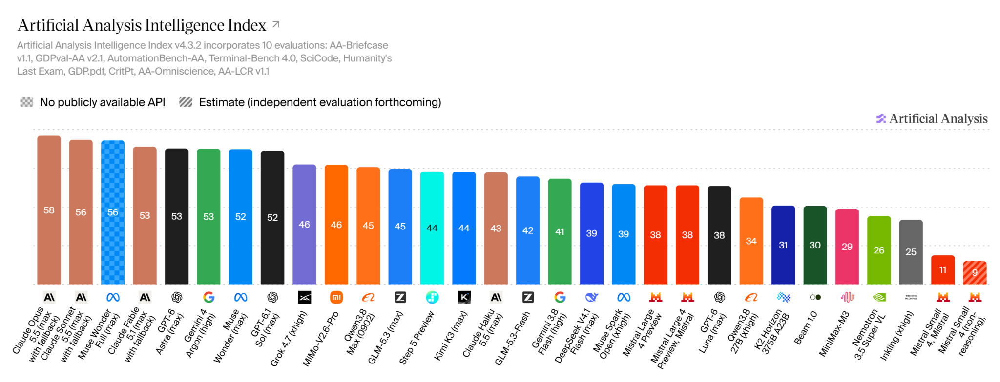
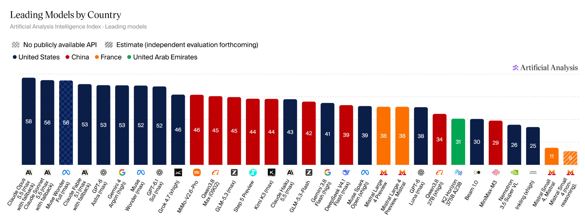
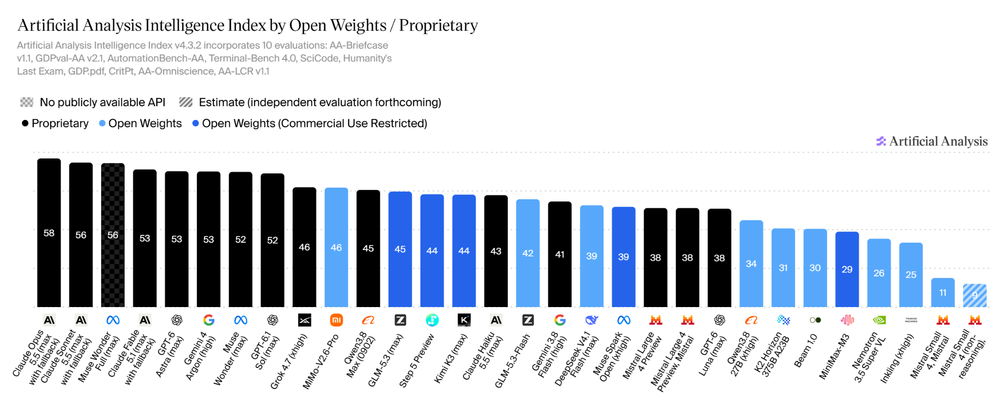
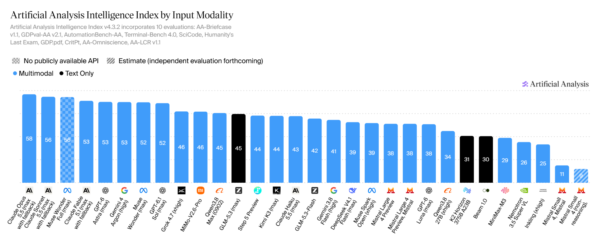
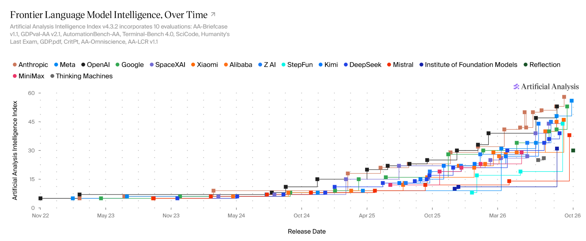
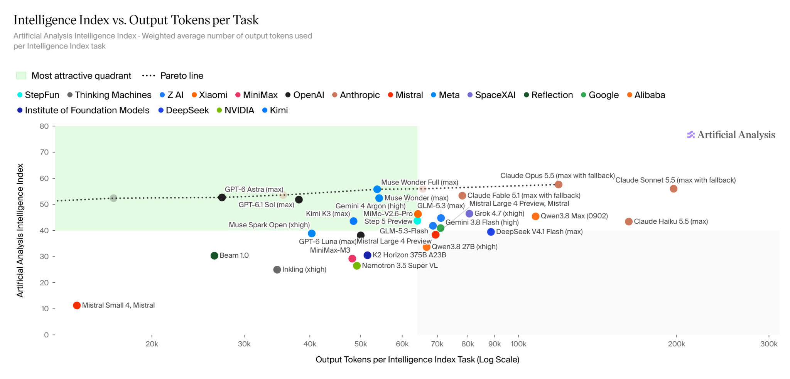
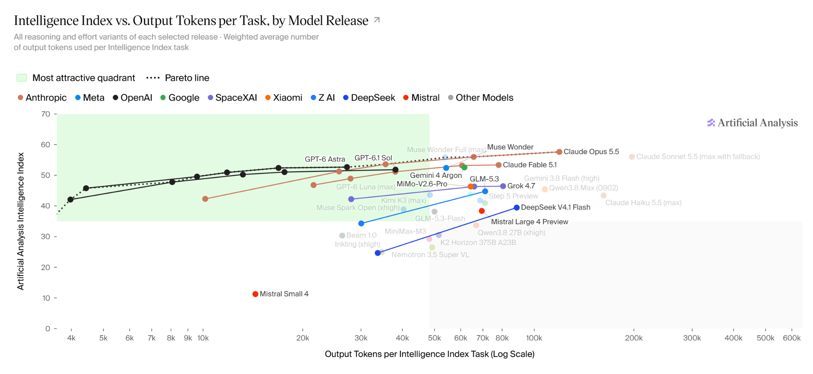
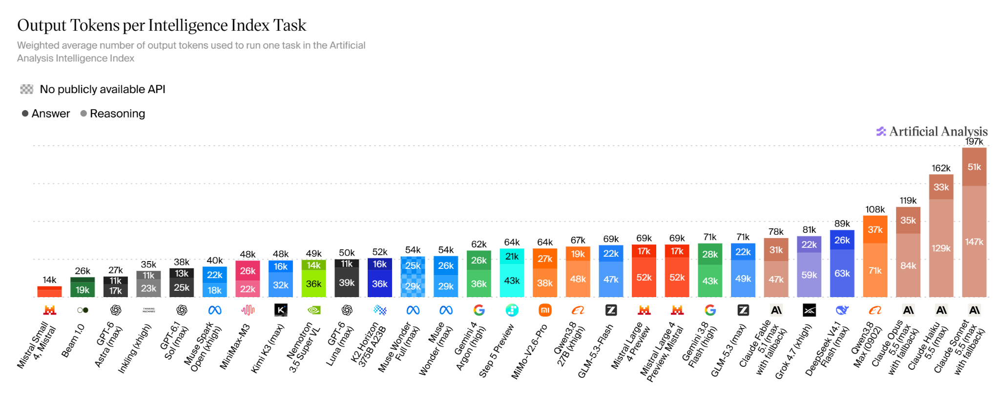
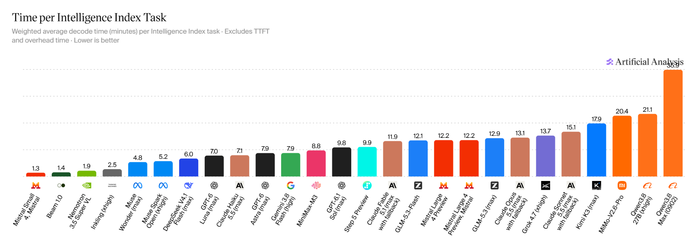

What Kind of Thing Is an Alien Mind?
Reading Jakub Pachocki on intelligence, agency, alignment, opacity, and recursive self-improvement
Mistral Large 4, released as a public API preview on 6 October 2026, marks a significant advance in European foundation-model production. Its approximately trillion-parameter sparse architecture, training on Mistral-operated European infrastructure, and competitive results on selected agentic, cybersecurity, financial, and legal benchmarks demonstrate substantial industrial capability. Nevertheless, the model remains below the strongest contemporary American systems on aggregate capability, while several Chinese open-weight models offer comparable or superior performance with greater immediate deployment independence.
Drawing on Artificial Analysis Intelligence Index v4.3.2, the article and its quantitative Appendix A distinguish general model capability, specialized task performance, inference expenditure, and operational efficiency. Large 4 scores 38 on the Intelligence Index, consuming approximately 69,000 output tokens, 12.2 minutes of decode time, and $1.13 in standard API expenditure per weighted task. Several competitors offer more favorable capability–cost–latency trade-offs, although Mistral achieves stronger results on selected cybersecurity and professional-agent evaluations. The analysis also challenges the claim that Mistral has reached the capability OpenAI offered seven months earlier: Artificial Analysis supports a qualified comparison with a retrospectively estimated March 2026 model, whereas Epoch AI places Large 4 near the performance achieved by OpenAI’s o3 in April 2025 and China’s open-weight Kimi K2.5 in January 2026. These are benchmark-dependent historical comparisons, not measurements of a universal technological delay.
Extending the layered framework developed in How Sovereign Is Kolibri?, the article assesses control over model development, training information, compute infrastructure, hardware, software, deployment rights, reproducibility, and corporate governance. Mistral materially strengthens Europe’s model-production capacity, but neither competitive models nor European-operated datacentres establish independence from foreign semiconductors, software ecosystems, or future technological developments. Meaningful sovereignty depends on the ability to deploy adequate models independently, substitute critical suppliers, and sustain successive generations of model development.
Update: Appendix B, added on 19 October 2026, reframes these findings around a strategic industrial-policy question: Is Mistral the EU’s generative-AI champion to back? It examines Mistral’s €3 billion financing round against the substantially greater capital and infrastructure commitments of American and Chinese competitors, the tension between frontier-model research and Mistral’s expansion into cloud infrastructure and enterprise services, and the potential consequences of China’s proposed AI technology export controls. These developments reinforce the strategic importance of indigenous model-production capacity without establishing that dependence on foreign open-weight models is already untenable. The resulting recommendation is to treat Mistral as a priority European commercial anchor, but not the exclusive instrument of European AI sovereignty. Public support should remain conditional on sustained model-development capability, commercial viability, meaningful deployment independence, and contributions to a diversified European research, compute, and industrial ecosystem.
An evidence-based comparison of Mistral with American and Chinese foundation models, and an assessment of what model capability contributes to European digital sovereignty.
Mistral AI introduced Mistral Large 4 on 6 October 2026 as a public API preview of its largest foundation model. The company describes a natively multimodal sparse Mixture-of-Experts (MoE) architecture with approximately one trillion parameters, 52 billion of them active, trained from scratch on 3,800 NVIDIA Grace Blackwell GPUs in its own European datacentres. Artificial Analysis independently measured an Intelligence Index score of 38 and identified it as the strongest evaluated model originating outside the United States and China. The model is a substantial European industrial achievement, although its weights were still scheduled for publication later in October rather than publicly available on the 18 October research cutoff.12
The release invites two claims that require different kinds of evidence. One is comparative: Mistral has reportedly reached the performance level OpenAI offered in March 2026, roughly seven months before Large 4. The other is strategic: achieving such performance with fewer resources strengthens European digital sovereignty. Even if the first claim is approximately correct on a particular benchmark, it does not by itself establish the second. Benchmark performance, training efficiency, deployment independence, and sovereignty over the underlying production system are distinct properties. A European model can perform competitively while depending on foreign accelerators and software; a Chinese model can have foreign provenance yet be operated independently on European infrastructure when its weights and license permit it.
The earlier article, How Sovereign Is Kolibri?, established a useful starting point: model sovereignty should be assessed through demonstrable controls, not inferred from the nationality of the company making the announcement. Kolibri’s documented Model Factory provides strong evidence of European control over development and deployment, even though the system uses NVIDIA accelerators and external teacher models and is not fully reproducible from public artifacts. Mistral raises the stakes by adding a larger commercial model portfolio, substantial capital investment, and European-operated frontier-scale compute. Whether that makes Europe meaningfully more autonomous depends on the capabilities it can preserve when a supplier, service, license, or corporate relationship changes.3
The argument developed here distinguishes three goals. Capability sovereignty concerns access to models good enough for strategically important tasks. Deployment sovereignty concerns the right and ability to retain, configure, and run those models independently of the original provider. Reproductive sovereignty concerns Europe’s capacity to develop successor models when existing checkpoints are no longer sufficient. They are related but not equivalent. A commercial API may provide access to a required capability without ensuring its continued availability; suitable open-weight releases and controlled inference infrastructure can establish a degree of deployment independence; and the ability to develop successor models requires sustained research expertise, training information, compute resources, and model-production organizations.
The analysis uses information available through 18 October 2026. Vendor specifications and announced infrastructure are identified as claims or plans where independent validation is absent; scores and prices are attributed to their named evaluation systems rather than presented as properties of intelligence itself. The first task is to understand what Large 4 actually changes, before testing the historical performance claim against both American and Chinese alternatives.
Mistral’s development cannot be reduced to the increase from billions to trillions of parameters. Mixtral 8×7B, released in December 2023, established its early emphasis on sparse architectures: its router activated two feed-forward experts per token, limiting the arithmetic performed relative to the full parameter population. Mistral Large 3, released in December 2025, extended this approach to 675 billion total and 41 billion active parameters, while the accompanying Ministral 3 family supplied smaller dense models for constrained deployment. Large 3’s base and instruction checkpoints were distributed under Apache 2.0, making that generation independently retainable and deployable.4
The March 2026 release of Mistral Small 4 combined instruction following, reasoning, and agentic coding in a model with approximately 119 billion total and 6 billion active expert parameters per token, with a longer context and downloadable weights. Mistral Medium 3.5, by contrast, pursued a dense architecture oriented toward demanding coding and tool-use workflows. These releases illustrate a deliberate portfolio rather than a single scaling trajectory: sparse models seek useful capability at manageable active computation, while dense and smaller models address execution simplicity, deployment constraints, and particular classes of tasks.56
Large 4 represents a further increase in both model scale and the sophistication of post-training. Mistral reports approximately 52 billion active parameters, although Artificial Analysis records 49 billion, an unresolved difference that may reflect accounting conventions or documentation revisions. The model accepts text and images and produces text. The independently evaluated preview exposes a 512,000-token context window, which should not be silently equated with larger limits that may be advertised for other configurations. A claim that training involved more than 160 languages establishes multilingual coverage in the corpus, not uniform quality across all those languages or tasks.7
The more consequential change may be organizational. Mistral’s release describes a reinforcement-learning system in which heterogeneous environments for coding, scientific work, tool use, security, and factuality share mechanisms for generating trajectories, verifying outcomes, and updating the model. At a reported scale of roughly 3,000 GPUs, its rollout system produces approximately 33 billion tokens daily, of which 16 billion remain trainable after filtering and masking. These figures support the existence of a serious post-training operation; they are not a disclosure of total pre-training FLOPs, the duration of development, or cumulative model-production costs.8
Early evaluations show important but uneven gains. Artificial Analysis scores the preview at 38 on its Intelligence Index and 50 on its Cyber Index. Its GDP.pdf result rises to 19%, an 18-percentage-point improvement over Large 3, but the evaluator attributes part of that gain to a change in the API’s image allowance from eight to one hundred images per request. Mistral separately reports 61.7% on DeepSWE v1.1, 28.3% on Terminal-Bench 4.0, and 59.9% on AutomationBench, among other evaluations. Those vendor results help identify workloads emphasized during development; they should not be merged uncritically with independently measured scores or interpreted as evidence of global superiority across all tasks.910
There is also a distinction between a model’s planned distribution and its present status. At the cutoff, customers can download and deploy the earlier Apache-licensed Large 3 and Small 4 checkpoints, whereas Large 4 remains a research preview accessed through Mistral’s service. The announced plan to release Large 4’s weights later in October is relevant to its prospective sovereignty value, but it is not a substitute for published weights, final license terms, and independent serving benchmarks. What the release already establishes is the ability of a European company to produce successive complex models; what it does not yet transfer is independent control of this particular new checkpoint.
OpenAI released GPT-5.4 on 5 March 2026. Artificial Analysis’s October catalogue assigns the xhigh reasoning configuration an Intelligence Index score of approximately 39, beside Large 4’s independently measured 38. Read as a retrospective, approximate performance-band comparison, this makes the seven-month statement plausible. However, the GPT-5.4 figure is explicitly estimated, not the result of a complete contemporaneous evaluation under the exact same October procedure. Nor does it cover GPT-5.4 Pro or every aspect of the capabilities available from OpenAI in March.1112
A second error would be to compare Large 4’s October score with numerical scores published for GPT-5.4 near its original release. Artificial Analysis revised its Intelligence Index repeatedly during 2026. By 18 October 2026, the Intelligence Index had reached version 4.3.2, incorporating ten evaluations: AA-Briefcase v1.1, GDPval-AA v2.1, AutomationBench-AA, Terminal-Bench 4.0, SciCode, Humanity’s Last Exam, GDP.pdf, CritPt, AA-Omniscience, and AA-LCR v1.1. The weighting is 30% agentic tasks, 20% coding, 30% general capabilities, and 20% scientific reasoning. A score obtained under an earlier evaluation suite is not on an invariant scale with October’s result; the difference between two such scores cannot be read as an improvement or deterioration in intelligence.13
The comparison must distinguish two clocks. Calendar time identifies when a model entered the market; measurement time identifies when and how its capabilities were evaluated. A sound retrospective historical analogy uses one evaluation methodology for both the present model and an earlier comparator, reports whether results were measured or estimated, and treats uncertainty as part of the conclusion. It should not assume a universal relationship between elapsed time and progress across tasks.
Epoch assigns Large 4 an ECI score of 147 and approximately 147 to OpenAI’s o3, released on 16 April 2025. Epoch’s o3 profile identifies a low-reasoning-effort evaluation, so the comparison establishes similarity between recorded capability estimates rather than equivalence under matched inference-time compute budgets. The elapsed period between these two releases is nearly eighteen months, not seven. This is a documented example of an earlier American proprietary model occupying the same ECI performance band; without exhaustive first-crossing analysis and confidence-interval testing, it is not proof that o3 was the first proprietary model ever to reach that band.1415
A comparable Chinese open-weight example also predates Large 4 by months. Epoch assigns 148 ECI to Moonshot’s Kimi K2.5, released on 27 January 2026, and 156 to Z.ai’s GLM-5.3, released on 14 August 2026. The former was already in approximately Large 4’s ECI band about eight months earlier; the latter was above it by the October cutoff. These comparisons use a different index from Artificial Analysis, and neither should be represented as the precise date when all Chinese open-weight systems first achieved equivalent capability.1617
The different historical analogies are summarized in Table 1. They are not intended to be averaged: the disagreement is analytically important because it exposes the benchmark dependence of the claim.
| Measurement and comparator | Large 4 score | Historical model and score | Historical release | Elapsed interval | Qualification |
|---|---|---|---|---|---|
| Artificial Analysis, October methodology | 38 | GPT-5.4 xhigh, 39 estimated | 5 Mar 2026 | ~7 months | Approximate, incompletely measured comparison |
| Epoch ECI, US proprietary | 147 | OpenAI o3, ~147 | 16 Apr 2025 | ~18 months | One matching historical example, not an earliest-crossing proof |
| Epoch ECI, Chinese open weights | 147 | Kimi K2.5, ~148 | 27 Jan 2026 | ~8 months | Similar rounded ECI band, not verified statistical equivalence |
| Epoch ECI, later Chinese open weights | 147 | GLM-5.3, ~156 | 14 Aug 2026 | — | Chinese comparator already scores higher |
The two indices differ in benchmark composition, modelling assumptions, and sensitivity to particular abilities. Epoch itself estimates uncertainty in ECI and, in a May 2026 analysis, found that the strongest open-weight models collectively lagged the closed-weight frontier by around four months on average during the first months of the year; requiring strict point-estimate superiority increased that estimate to roughly six months. This describes the best open-weight ecosystem as a whole, not Mistral’s individual lag. Epoch also reported in October that the leading open-weight cybersecurity model lagged the proprietary cyber frontier by six to seven months on a different, domain-specific index. Neither statistic may legitimately be substituted for Large 4’s general-purpose historical position.1819
Composite scores also conceal important differences. Large 4 can be strong in particular agentic work, coding, or cyber evaluations yet remain weaker on difficult scientific questions and knowledge reliability. Its results depend on tool permissions, reasoning effort, API behavior, model snapshots, and the evaluation harness. A one-point difference in a weighted index has no stable interpretation as a percentage of intelligence or a fixed delay in months. A defensible estimate would require the complete archived set of release dates, scores under a common versioned benchmark, model-level uncertainty, and an explicit definition of statistical equivalence. The available evidence supports useful historical comparisons, not an exact scalar technology lag.
Mistral Large 4 is not at the contemporary global frontier of measured aggregate capability. On Artificial Analysis’s October methodology, Claude Opus 5.5 scores 58 and GPT-6 Astra 53, substantially ahead of Large 4’s 38. Yet this aggregate gap does not establish uniform inferiority across economically or strategically relevant tasks. Large 4 reaches 50 on the independently evaluated Cyber Index and 82% on CyberGym-E2E-AA, while third-party financial-research and legal-agent evaluations show competitive results against selected proprietary models. These outcomes concern different capabilities, benchmark populations, and evaluation procedures; they neither erase the general-purpose performance gap nor establish overall frontier parity. Their significance lies in showing that the practical capability frontier is workload-dependent, as examined quantitatively in Table 8.2021[^mistral-and-the-european-ai-frontier-appendix-domain-vals]
The more consequential comparison for autonomy is not just Europe against American proprietary APIs. American developers also distribute open-weight artifacts: Mistral’s score of 38 lies close to Meta’s Muse Spark Open, released on 15 October with a score of 39 and downloadable weights under Meta’s own model license. NVIDIA’s Nemotron family, Google’s Gemma releases, and earlier American open-weight systems occupy other points in the quality, footprint, and licensing space. Therefore, the equation US equals closed; Europe equals open does not describe the market.22
Chinese competition is even more consequential for the claim that Mistral offers unique European control at a given quality level. Artificial Analysis reports 46 for Xiaomi’s MiMo-V2.6-Pro, 45 for Z.ai’s GLM-5.3, 44 for Moonshot’s Kimi K3, 42 for GLM-5.3-Flash, and 39 for DeepSeek V4.1 Flash at the specified high-reasoning setting. These models have downloadable weight releases, although model-specific licenses differ and cannot be assumed equivalent to Apache 2.0. Several therefore combine stronger measured aggregate performance than Large 4 with the possibility of independent inference.23
Table 2 selects representative configurations to make this asymmetry visible. Its purpose is not to rank national sovereignty from benchmark scores, nor to imply that every model is multimodal or suitable for the same task; model availability refers only to the 18 October 2026 cutoff.
| Origin and model | AA Intelligence Index | Weights at cutoff | Access and licensing implication |
|---|---|---|---|
| France — Mistral Large 4 Preview | 38 | Not yet released | Proprietary API preview; future weight release announced |
| US — Claude Opus 5.5 (max) | 58 | No | Proprietary service |
| US — GPT-6 Astra (max) | 53 | No | Proprietary service |
| US — Meta Muse Spark Open (xhigh) | 39 | Yes | Model-specific license with conditions |
| China — Xiaomi MiMo-V2.6-Pro | 46 | Yes | License requires model-specific review |
| China — Z.ai GLM-5.3 (max) | 45 | Yes | GLM-5.3 license, with restrictions |
| China — Moonshot Kimi K3 (max) | 44 | Yes | Kimi-specific license, with conditions |
| China — GLM-5.3-Flash | 42 | Yes | MIT-licensed variant |
| China — DeepSeek V4.1 Flash (max) | 39 | Yes | MIT-licensed release |
An open-weight designation means that an operator can obtain the model checkpoint; it does not establish rights to every kind of redistribution, a complete training-data release, or independent reconstruction of the model. Some providers use permissive software licenses, while others add revenue thresholds, acceptable-use requirements, attribution rules, or separate commercial-service conditions. The actual license must be read before claiming customer exit rights. Even with permissive terms, very large models may require costly multi-GPU infrastructure, proprietary drivers, specialized kernels, or substantial system integration.24
This creates a counterintuitive sovereignty result. A European enterprise might achieve strong operational autonomy by downloading and running a Chinese model entirely within its controlled environment, whereas a European-built model available only through an API may leave it dependent on the provider’s continued service. The Chinese artifact’s provenance still matters for security assurance, legal diligence, training provenance, and the ability to obtain future improvements; it does not automatically establish an active remote-service dependency. Equally, European local hosting does not eliminate the need for software-supply-chain inspection, access control, model-behavior evaluation, or incident-response procedures.
Foreign open weights nevertheless do not create indigenous European model-production capacity. If the original developers stop publishing successors, European users can preserve existing checkpoints, but producing new frontier generations demands training expertise, lawful training information, computing capacity, and research infrastructure that those checkpoints do not contain. This is the central distinction on which the sovereignty analysis turns.
A model’s benchmark score, its operating cost, and the efficiency of the organization that produced it are three different measurements. A sparse MoE offers one illustration. Although Large 4 activates only a minority of its approximately trillion parameters for a particular token, a serving system must still accommodate its much larger expert population and coordinate memory, routing, communication, batching, and numerical kernels. Active-parameter count is neither a complete inference-cost estimate nor an estimate of pre-training expenditure. A similarly sized model can have different costs and capabilities because of training data, architectural choices, quantization, hardware utilization, and inference-time reasoning.
Mistral priced Large 4 Preview at $1.36 per million input tokens and $4.18 per million output tokens before a 50% launch promotion. Artificial Analysis reports approximately $1.13 per Intelligence Index task at standard prices, falling to $0.57 during that promotion. Its 6 October release comparison puts GLM-5.3-Flash at $0.25 and DeepSeek V4.1 Flash at $0.27 per index task. That is more than a fourfold standard-price difference against two comparators with similar or higher aggregate index scores. Such a result qualifies the claim that Mistral leads on model efficiency: it is competitive against some premium American APIs, but not invariably the most economical system at a given measured quality.25
The Artificial Analysis cost measure accounts for the benchmark’s distribution of prompt, cached, reasoning, and generated tokens. It is more informative than price per million input tokens alone because reasoning configurations can generate radically different amounts of intermediate output. Yet it is not the cost of a successful business deliverable. Different benchmarks reward different capabilities, and an agent might require external tool calls, several attempts, retrieval, validation, and human approval before the result is usable. The cost of the underlying API also need not reflect its operator’s actual marginal inference cost.
A limited operational model makes the distinction precise. For a homogeneous task, let C_{\mathrm{attempt}} be the mean cost of one execution, including inference, tools, and verification, and let p_{\mathrm{accept}} be the probability that it satisfies predefined requirements. Under independent, identically distributed retry attempts with constant mean cost and success probability, the expected cost per accepted result is
C_{\mathrm{accepted}} = \frac{C_{\mathrm{attempt}}}{p_{\mathrm{accept}}}, \qquad 0 < p_{\mathrm{accept}} \leq 1. \tag{1}
The assumptions are restrictive: failures may be correlated, tool actions irreversible, and retries unavailable or increasingly expensive. Nonetheless, the expression explains why a cheap but unreliable model can be more expensive for a given application than a costly, accurate one. For industrial or regulated workloads, assurance and the consequences of incorrect outputs may dominate the inference bill. Appropriate evaluation therefore measures accepted-result quality, tail latency, throughput, security controls, and total deployment costs under the same workload.
Self-hosting changes the economics again. An enterprise operating an open-weight model substitutes accelerator expenditure or rental, power, cooling, memory, networking, security, serving engineering, and idle capacity for variable API charges. Dedicated infrastructure can become economical under sufficiently stable load or strong data-control requirements, but the break-even point depends on model footprint, batching, hardware availability, reliability requirements, and serving implementation. Large 4’s unreleased checkpoint at the cutoff prevents an independent, reproducible assessment of this option for the new model.
The resource-efficiency claim requires still more caution. Mistral’s disclosure of 3,800 Grace Blackwell GPUs and its reinforcement-learning throughput provides evidence of scale, not total investment per unit of quality. Training-program cost includes hardware acquisition or rental, utilization, data preparation, failed experiments, pre-training, post-training, evaluation, personnel, power, and infrastructure. A bare GPU count cannot be compared directly with another company’s funding, workforce, or estimated final-training GPU-hours. DeepSeek-V3’s widely cited estimate of $5.576 million for approximately 2.788 million H800 GPU-hours is instructive precisely because its technical report explicitly bounds that calculation to reported training compute; it excludes broader research and development expenditures.26
Mistral’s announced €3 billion Series D, led by Samsung Electronics, is also significant. Relative to the largest US technology conglomerates its resources may be smaller, but billions in financing and European-operated high-end clusters are not limited means in an absolute industrial sense. Funding raised is not spending incurred, and visible infrastructure does not establish training efficiency. A claim that Mistral obtains more capability per euro or FLOP than American or Chinese competitors remains unverified without harmonized resource and evaluation data.27
The economic conclusion is thus deliberately narrower than the engineering narrative: Mistral has demonstrated a substantial production organization and competitive model capability, but neither universal inference-cost leadership nor superior total development productivity follows from the available numbers.
The sovereignty question is better formulated as an engineering and institutional dependency analysis than as a nationality label. For each layer, an assessor should ask what Mistral actually controls, what a customer receives, what remains dependent on third parties, and what happens when that relationship changes. These are different actors with different rights. The producer may control the internal training system while keeping it proprietary; a customer may retain a released model’s weights without possessing the means to reproduce its training process.
Research and model production. Mistral has demonstrated control over architecture, experimentation, training, post-training, model selection, and release across successive generations. The company’s Forge platform commercially offers elements of the same model customization and training workflow, which supports the existence of an integrated production system. It does not show that a customer receives the complete internal training factory, model recipes, infrastructure automation, intellectual-property rights, or the data needed to recreate Large 4 from scratch. Internal repeatability and public reproducibility are different achievements.28
Training information. Mistral documents multilingual and synthetic-data processes and describes task-specific reinforcement-learning environments. It does not publish a complete reconstructable corpus or an inventory sufficient to determine whether significant external teacher models or evaluation services are required to produce subsequent Large 4 generations. Unknown provenance should neither be treated as proof of reliance on foreign teachers nor as evidence of independence. By contrast, the Kolibri analysis identifies specific externally developed models used to generate or judge parts of Aleph Alpha’s synthetic-data pipeline; this is a documented dependency, not a hypothetical one.29
Infrastructure. The Large 4 training run on Mistral-operated European datacentres establishes a stronger form of compute-operational control than exclusive reliance on a foreign cloud provider. Mistral has also announced regional inference and ambitious future European capacity expansion. These measures can reduce provider concentration and support jurisdictional control, but announced future facilities cannot be counted as installed capacity, and a regional service guarantee must be evaluated against actual processing, subcontracting, key custody, support access, and recovery arrangements.30
Hardware and software. A European facility operating NVIDIA accelerators still depends on internationally distributed semiconductor design, manufacturing, high-bandwidth memory, packaging, networking, drivers, compilers, and specialized kernels. CUDA and NCCL are prominent examples of software and communication technologies with which modern large-scale training is tightly integrated. The relevant test is not whether alternative accelerators exist in principle, but whether Mistral’s full training and serving pipelines can be ported without unacceptable losses in performance, reliability, or cost. Such equivalence has not been demonstrated publicly.31
Deployment and reproduction. Apache-licensed earlier Mistral models offer substantial rights to retain, modify, and self-host the released versions. That does not make Large 4 independently deployable before its weights and applicable license appear. Even after a future release, retaining a checkpoint will not automatically provide the associated training data, experiment history, or resources needed to produce its successor. Reproductive sovereignty is consequently a stronger and more expensive claim than provider-independent inference.
Corporate and jurisdictional control. Mistral is a French developer attracting European and international investors. The €3 billion round strengthens its capacity to finance models and infrastructure, but its announcement does not reveal every voting right, protective provision, future change-of-control condition, or intellectual-property arrangement. Foreign investment does not prove foreign control, and European incorporation does not prove freedom from every foreign influence. Both propositions require company-specific governance evidence rather than inference from investors’ nationality.
These distinctions yield Table 3, which is qualitative by design: it records evidence and unresolved dependencies instead of manufacturing a synthetic numerical sovereignty score.
| Layer | Demonstrated Mistral position | Unresolved boundary |
|---|---|---|
| Human and intellectual | European research and systems-engineering organization | Retention, governance, international knowledge inputs |
| Model production | Successive large training runs and integrated post-training | Internal factory is not publicly reproducible |
| Training information | Data and RL processes operated internally | Corpus provenance, teacher services, substitute inputs |
| Compute operations | Large 4 trained and served on European-operated infrastructure | Future expansion and supporting service dependencies |
| Hardware | High-end clusters in Europe | NVIDIA accelerators and global semiconductor supply |
| Software | Training and serving engineering under Mistral control | Complete portability away from vendor-specific runtimes not demonstrated |
| Customer deployment | Downloadable earlier Mistral model generations | Large 4 weights unavailable on 18 October |
| Reproduction | Repeatable model generation within Mistral | External reconstruction and autonomy from upstream supplies unproven |
| Corporate control | French organization and European operating footprint | Full shareholder and future control rights not public |
Mistral is not the only relevant European initiative, and it would be misleading to rank every project by its largest benchmark score. Aleph Alpha’s Kolibri documents an unusually detailed internal Model Factory and distributes retained weights; its production pipeline also explicitly reveals non-European teacher-model and accelerator dependencies. Apertus, developed by ETH Zurich, EPFL, and the Swiss National Supercomputing Centre, released 8B and 70B models in September 2025 with training code, intermediate checkpoints, and extensive documentation. Its public transfer of methodological knowledge is stronger than that of many private API-based releases, although Switzerland is European but not an EU member.32
The EuroLLM model family emphasizes multilingual coverage, including official EU languages, rather than racing exclusively for the top general-purpose benchmark score. OpenEuroLLM is a separate collaborative programme aimed at distributing training resources, methods, evaluation, and model artifacts across European institutions. Both are important to a sovereignty strategy because a language community, an administrative institution, or a researcher may value replicability and domain coverage more highly than the highest general-purpose score. Their progress and access rights still require artifact-level verification; a programme’s stated intentions cannot be substituted for completed releases.33
These projects contribute complementary capacities. Mistral offers commercial model-production scale and a supported enterprise platform; Kolibri provides notable production traceability and retained customer artifacts; Apertus emphasizes public training transparency; multilingual programmes strengthen access to language-specific capability and shared research assets. The resulting European ecosystem is more resilient when knowledge and inference options are spread across multiple independent institutions than when all future capability depends on one national champion.
The practical test of sovereignty is not whether all upstream technologies are European but whether a strategically important capability can survive a supplier’s withdrawal or a change in the governing terms. Some dependencies are immediately operational; others concern the next training run rather than today’s service. Confusing them produces implausible claims of either complete independence or inevitable collapse.
An API withdrawal can be disruptive because customers may not possess the proprietary model’s weights or its exact behavior. A properly licensed and tested open-weight fallback can preserve parts of the service, subject to differences in task accuracy, multimodal support, tools, context limits, safety policies, and workload capacity. Conversely, restrictions on new accelerator deliveries do not imply that installed servers immediately stop working: existing deployments may remain available while hardware replacement, expansion, and future model training become progressively constrained.
Licensing and corporate changes present another asymmetry. A developer’s change of terms for future releases need not revoke perpetual rights already granted under a particular earlier license, although the exact effect depends on that license and applicable law. A change in ownership can redirect future development or service strategy while previously obtained, independently executable weights remain usable. An external teacher-model service disappearing may have no immediate effect on a completed checkpoint but impair the production of higher-quality future training examples. The consequence depends on whether the original data, prompts, reward mechanisms, and substitutes are retained.
Table 4 summarizes these distinctions without claiming that the disruptions are equally likely.
| Hypothetical disruption | Existing service | Successor model production | Decisive control |
|---|---|---|---|
| US proprietary API unavailable | Retained open-weight fallback may maintain reduced or comparable functions | Unaffected only if domestic training inputs and compute remain accessible | Tested substitutability, data and integration portability |
| Restrictions on accelerator imports | Installed infrastructure may continue operating | Expansion and hardware replacement constrained | Spares, alternative accelerators, porting capability |
| Chinese developer stops new open-weight releases | Already retained licensed checkpoint can still run | Upgrades require European adaptation or a new model source | Artifact custody, rights, expertise |
| License changes for future releases | Earlier checkpoint rights depend on original terms | Later generations may require a new contract or substitute | License review and version governance |
| Foreign teacher API withdrawn | Existing checkpoint generally unaffected | New synthetic data or reward pipelines may degrade | Retained datasets and equivalent teacher capability |
| European developer acquired or service withdrawn | Self-hosted checkpoints can survive; API-only workloads remain exposed | Governance and investment priorities may change | Rights to weights, independent serving, exit plan |
| Proprietary accelerator tooling unsupported | Retained runtime may keep functioning | Maintenance, security fixes, and future scaling become harder | Tested software portability and supply continuity |
Legal frameworks partly address transparency and portability but do not resolve the underlying technical gaps. Article 53 of the EU AI Act requires documentation, specified information to downstream providers, copyright-related policies, and a sufficiently detailed public summary of training content for in-scope general-purpose models. It does not generally require publication of the complete training corpus, all teacher prompts, internal experiments, or full production code. The Data Act’s switching provisions can improve portability between qualifying data-processing services, but should not be read as automatically granting customers ownership of a proprietary foundation model’s weights or guaranteed behavioral equivalence from a replacement service.34
Europe is investing to reduce compute concentration through AI Factories and the proposed AI Gigafactories. The EuroHPC call for AI Gigafactory consortia opened on 30 July 2026 and was still a procurement process at the article’s cutoff; the procurement notice reviewed on 18 October lists a deadline of 3 December 2026. Such plans may expand future capacity, but they do not establish that the planned compute, and still less a domestically manufactured accelerator supply chain, is already available.35
The central operational lesson is that artifact custody, production capacity, and critical-supplier substitutability should be tested separately. Mistral improves Europe’s position at the first two layers through its released model portfolio and demonstrated model factory; the third remains substantially dependent on international infrastructure. This is a real advance, but not full-stack autonomy.
Three hypotheses offer a more useful policy framework than an unconditional demand that every European model outrank its strongest American or Chinese counterpart. Under H1, frontier parity is essential when strategically important research, security, or industrial work cannot be completed satisfactorily by lower-capability models. Under H2, sufficient capability is enough when a controllable European deployment satisfies the relevant task’s quality, cost, latency, and assurance requirements. Under H3, sustained production capacity matters most because today’s checkpoint will eventually become inadequate, and European organizations need the ability to develop its successor.
H1 is plausible where capability acts as a threshold rather than a marginal improvement. A scientific problem or long-horizon engineering workflow may be infeasible for a less capable model, even after retrieval and task-specific adaptation. Yet a general-purpose benchmark gap does not prove that every strategically important European application depends on the additional score. The proper test identifies a concrete workload, an acceptance threshold, the best available European-controlled solution, and the consequences of depending on external providers when that threshold cannot otherwise be met.
H2 is compelling across a wider range of business and public-sector work. A model integrated with authoritative documents, deterministic software, controlled data, domain-specific evaluation, and human sign-off may deliver adequate outputs without global frontier leadership. In a regulated industrial setting, access to valid operational context and robust execution boundaries can matter more than another increment on an aggregate intelligence index. However, sufficient capability must be established empirically; national origin cannot excuse errors, poor security, inadequate language coverage, or unacceptable total cost.
H3 addresses a different time horizon. Even when foreign open weights provide the best immediate economics, exclusive reliance on them may leave Europe without the research teams, datasets, software systems, and computing expertise needed for future generations. Mistral’s organizational competence and repeatable model releases are valuable because they preserve that productive option, not solely because Large 4 performs well today. Public research infrastructure and openly documented training resources can complement commercial producers by distributing production knowledge and reducing single-company concentration risk.
The European Commission’s Apply AI Strategy emphasizes adoption in strategic industries and public administration alongside infrastructure and skills; that orientation is broadly compatible with H2 and H3. Mistral’s announced collaborations in scientific and industrial applications illustrate possible demand for controlled European models, but a letter of intent or partnership announcement should not be represented as an independently validated production outcome. Meanwhile, its partnerships with NVIDIA and Microsoft may expand engineering resources and commercial reach while introducing their own control boundaries. Cooperation is not the opposite of sovereignty; dependence becomes strategic when a partner is irreplaceable under adverse conditions.3637
The resulting allocation problem is not solved by a single metric. Incremental spending on frontier training may be justified for workloads that cannot otherwise be performed; other funding may deliver greater autonomy through reliable public compute, model evaluation, deployment portability, multilingual datasets, specialized models, or semiconductor and software diversification. What matters is the causal link between expenditure and the dependency or capability deficit it is intended to reduce.
Mistral deserves recognition as a leading European commercial foundation-model developer. Large 4 demonstrates model-design, training, reinforcement-learning, and operational capabilities at substantial scale, while its performance on selected cybersecurity, legal-agent, and financial-research evaluations shows that meaningful competitiveness can coexist with a substantial gap in aggregate capability. Its earlier open-weight portfolio also provides concrete options for independent deployment. These achievements are more consequential than the nationality of a product label: Europe possesses an organization capable of repeatedly producing advanced models and delivering competitive capabilities for particular workloads, rather than merely operating a local interface to models trained elsewhere.
Yet the claim that Mistral has made European AI sovereign is not established. Large 4 itself remained a hosted preview at the cutoff; published information does not support full public reconstruction of its training process; its hardware and significant software infrastructure depend on suppliers outside Europe; and control of European datacentres is not equivalent to autonomy over the semiconductor supply chain. Strong European producer sovereignty and incomplete full-stack sovereignty are entirely compatible findings.
The claimed seven-month delay should be treated with the same discipline. Artificial Analysis’s retrospective comparison with GPT-5.4 supplies one approximate analogy, explicitly qualified by an estimated score. Epoch’s independent index places Large 4 in the same rounded capability band as OpenAI’s o3 released nearly eighteen months earlier, while Kimi K2.5 reached a similar ECI band about eight months earlier as a Chinese open-weight model. These are benchmark-specific examples, not scientifically justified measurements of a universal lag. The disagreement reveals that model progress is multidimensional and that a single chronological headline cannot carry the explanatory weight often assigned to it.
Nor does a smaller visible budget establish superior engineering productivity. Mistral’s financing and GPU disclosures confirm substantial resources and ambition; comparing its cumulative cost per unit of capability with those of the leading American and Chinese developers would require harmonized data that are not publicly available. Its hosted-service economics are also not uniformly superior to those of Chinese competitors with comparable or higher evaluated scores.
The strongest strategic case for Mistral therefore rests elsewhere: it makes Europe less dependent on importing all future model capability, provides additional options for European-controlled infrastructure and model deployment, and accumulates expertise that cannot simply be purchased as a finished checkpoint. Foreign open-weight models can strengthen Europe’s immediate operational autonomy; European model producers strengthen its ability to build successors. A resilient European strategy needs both, together with institutions that can preserve knowledge, substitute critical suppliers, and evaluate whether deployed systems truly meet the requirements of consequential workloads.
European digital sovereignty is not the possession of a model that was once near a foreign frontier. It is the durable capacity to choose, operate, improve, and replace AI capabilities without unacceptable external vetoes. Mistral materially advances that capacity at the model-production layer. How far it extends across deployment, infrastructure, training inputs, and future generations remains an engineering and institutional question—not one that any single benchmark score or national-champion designation can settle.
This appendix expands the article’s comparison of Mistral with American proprietary models and American and Chinese open-weight systems. Its quantitative basis is ten Artificial Analysis charts captured on 18 October 2026, all evaluated or displayed under Intelligence Index v4.3.2, supplemented by independently documented results from Epoch AI, Mistral’s 6 October launch announcement, and specified third-party professional benchmarks. The screenshots are fixed editorial observations, not a versioned machine-readable dataset: values transcribed from them are approximate, and the live leaderboards may subsequently change. Each of the ten figures is reproduced and interpreted below. All image paths are relative to index.qmd; the images must be in the same folder, under the exact filenames used here.3839
Artificial Analysis’s Intelligence Index aggregates ten evaluations: AA-Briefcase v1.1, GDPval-AA v2.1, AutomationBench-AA, Terminal-Bench 4.0, SciCode, Humanity’s Last Exam, GDP.pdf, CritPt, AA-Omniscience, and AA-LCR v1.1. The index allocates 30% of its weighting to agentic tasks, 20% to coding, 30% to general capabilities, and 20% to scientific reasoning. Forty-five percent of its weighting involves private questions or answers. The index is valuable as a standardized broad comparison, but it is not a direct measure of intelligence as a scalar physical quantity, and differences in index points must not be converted into percentages of intelligence.40
The additional metrics have distinct units and system boundaries. Output tokens per task is a weighted average of generated reasoning and answer tokens across the index workload. Decode time per task measures the weighted time spent generating output, excluding time to first token (TTFT) and other overhead; it is not an end-to-end workflow duration or availability commitment. Cost per task applies published API tariffs to the evaluator’s weighted mixture of prompt, cached, reasoning, and answer tokens; it is not cost per successfully completed business task, cost of model training, or the economic cost of self-hosting weights. Moreover, a model’s native token count, output-speed normalization, and reasoning-token reporting are not guaranteed to be identical across providers. These distinctions prevent the three resource measures from being collapsed into one general assertion of engineering efficiency.41

Figure 1 provides the common capability baseline. Mistral Large 4 Preview scores 38. The leading proprietary configurations include Claude Opus 5.5 at 58, Claude Sonnet 5.5 at 56, Claude Fable 5.1, GPT-6 Astra, and Gemini 4 Argon at 53, and Muse Wonder and GPT-6.1 Sol at 52. Muse Wonder Full also scores 56, but the checkered display marks the absence of a publicly available API for that configuration; its accessibility must not be assumed equivalent to an ordinarily purchasable endpoint. These comparisons establish a significant aggregate performance gap between Large 4 and the strongest closed-weight American services, without revealing whether that gap matters for any particular application.
The intermediate band is more relevant to Mistral’s immediate competitive market. MiMo-V2.6-Pro scores 46; GLM-5.3 scores 45; Step 5 Preview and Kimi K3 score 44; GLM-5.3-Flash scores 42; and DeepSeek V4.1 Flash and Muse Spark Open each score 39. GPT-6 Luna scores 38, the same rounded value as Large 4. Thus Mistral is not merely behind American closed models: several Chinese models, including models with downloadable weights, also score higher. Conversely, a difference of one point between Large 4 and a 39-point model does not establish a statistically significant capability difference without confidence intervals and task-level uncertainty. This is a comparison of specified configurations, not a general ranking of entire model families or national research organizations.
The lower end of the chart adds an important caveat about portfolios. Mistral Small 4 scores 11 in the shown evaluated configuration, while the separate non-reasoning entry is estimated at 9. The large separation from Large 4 is not evidence that all European models are weak or that Small 4 is unusable. These artifacts target different resource budgets and deployment conditions. Similarly, neither a high general index score nor a low one establishes that a model is suitable for a particular legal, engineering, multilingual, or safety-critical workflow.

Figure 2 reorganizes the same general-capability results by country of model developer. The highest entries in this selection are associated with the United States, followed by strong models originating in China. Large 4, highlighted under France at 38, is the strongest model from outside those two countries in Artificial Analysis’s dated launch comparison. The United Arab Emirates appears with a lower-scoring representative, K2 Horizon, at approximately 31; countries without a leading model in the selected sample do not appear. The figure supports describing Mistral as a particularly important European commercial producer, but not treating the sample as an exhaustive census of every European model or an evaluation of national innovation systems.42
Country is a property of the model-producing organization, not an observable measure of where all components were manufactured, where inference takes place, who legally controls a checkpoint, or whether an operator can preserve a service after its vendor withdraws. A French model may be trained on US-designed accelerators, while a Chinese open-weight artifact may be lawfully retained and run inside a European-controlled datacentre. This figure is therefore useful for production provenance, and systematically insufficient for deployment, hardware, and reproductive sovereignty.

Figure 3 reveals why the sovereignty-relevant comparison is not simply France against US proprietary APIs. The highest-scoring American models are closed-weight in this snapshot, but Meta Muse Spark Open scores 39 and is distributed with downloadable weights under a model-specific license. Chinese downloadable models already appear above Large 4: MiMo-V2.6-Pro at 46, GLM-5.3 at 45, Kimi K3 at 44, GLM-5.3-Flash at 42, and DeepSeek V4.1 Flash at 39. The chart differentiates downloadable weights with and without identified commercial-use restrictions. These classifications are broad and cannot replace inspection of each specific license, including field-of-use restrictions, attribution, commercial-service conditions, or redistribution rights.43
Crucially, Large 4 is marked proprietary at the 18 October cutoff, even though Mistral promised to publish the weights by the end of that month. A planned release is not an independently retainable checkpoint. Earlier Mistral models, by contrast, have been distributed under open-weight licenses and should be evaluated separately. Consequently, at the date shown, a European customer may have stronger artifact-level continuity rights with an appropriately licensed Chinese or American checkpoint than with Large 4’s API preview. This does not imply stronger European model-production sovereignty: possession of foreign weights does not reproduce the research programme, data, training code, or industrial capacity required to train successor models. It distinguishes an autonomous deployment from an autonomous production pipeline.44

Figure 4 separates text-only from multimodal configurations. Mistral Large 4 is shown as multimodal because it accepts text and images, although its evaluated output is text. Most highest-scoring configurations in the displayed frontier are also multimodal; certain strong systems, including the shown GLM-5.3 configuration, are classified as text-only. The comparison therefore refutes both the assumption that high aggregate scores require identical input modalities and the assumption that a multimodal label proves strong capability at image-rich industrial tasks.
The general index includes some image and document-oriented work, but it does not measure every visual capability: object localization, dense grounding, diagram interpretation, geospatial perception, visual inspection, or large-scale document extraction may differ greatly between models with similar aggregate scores. Mistral’s own launch report cites 42% on Dense 200, compared with approximately 41% for GPT-6 Astra; that is a developer-reported task-specific comparison, not evidence that Large 4 matches Astra on all vision tasks. Artificial Analysis independently reported 19% on GDP.pdf, with part of the gain over Large 3 attributable to the API accepting more images per request. The serving interface and evaluation harness can therefore change observed document performance without demonstrating an equivalent improvement in model weights alone.4546

Figure 5 plots changing leading scores by creator against model release dates, expressed using the October 2026 evaluation framework. The rising step patterns illustrate the repeated advance of the strongest American and Chinese model-producing ecosystems. Mistral’s current result is near 38, while the leading contemporaneous configurations approach 58. The chart makes two points that are often confused: Large 4 can improve substantially relative to previous European releases while remaining behind the current frontier; and a historical comparator must be chosen by its measured score on the same benchmark version, not merely by its release date or nominal model generation.
The seven-month analogy is defensible only in a qualified sense. Artificial Analysis’s retrospective catalogue assigns GPT-5.4 xhigh, released 5 March 2026, an estimated score of 39, near Large 4’s independently evaluated 38 on 6 October 2026. This is an approximate score-band match with a model released seven months earlier, not an independently established, statistically tested earliest date when the American frontier first reached 38. It does not characterize GPT-5.4 Pro, task-specific capabilities, or products with different tool and reasoning budgets. Because the historical figure contains many model releases and uses a dense visual encoding, precise earliest-crossing dates must be reconstructed from a versioned model table rather than inferred from pixel positions on its lines.47
Epoch AI yields a different, independently useful historical analogy. Its Epoch Capabilities Index (ECI) assigns approximately 147 to both Large 4 (October 2026) and OpenAI o3 (16 April 2025), almost 18 months apart. It assigns 148 to Chinese open-weight Kimi K2.5 (27 January 2026), roughly eight months before Large 4, and 156 to GLM-5.3 (14 August 2026), ahead of Large 4 even before its release. These ECI observations cannot be subtracted from or converted into Artificial Analysis points. Epoch uses a statistical model spanning a different body of benchmarking evidence, including internally run, third-party, and developer-reported evaluations; differences in estimated scores require attention to uncertainty and configuration. The o3 model profile describes a low-reasoning-effort evaluation, so a matching rounded ECI score does not imply identical reasoning budgets or equally capable product ecosystems.4849505152
| Historical benchmark | Large 4 | Earlier comparator | Comparator date | Illustrative interval |
|---|---|---|---|---|
| Artificial Analysis v4.3.2 | 38 | GPT-5.4 xhigh: 39, estimated | 5 Mar 2026 | ~7 months |
| Epoch ECI | 147 | OpenAI o3: 147 | 16 Apr 2025 | ~18 months |
| Epoch ECI | 147 | Kimi K2.5, open weights: 148 | 27 Jan 2026 | ~8 months |
| Epoch ECI | 147 | GLM-5.3, open weights: 156 | 14 Aug 2026 | Already higher |
Epoch’s separate finding that leading open-weight models lagged the closed-weight frontier by about four months on average early in 2026 describes a changing global open-weight frontier, not Mistral’s own lag. Nor is its later approximately six-to-seven-month finding about the open-weight cybersecurity frontier a valid general-purpose Mistral delay. The correct conclusion is that a model has several workload- and methodology-dependent historical capability relationships, not one universal age or fixed number of months behind.53

Figure 6 plots model capability against the quantity of generated output per weighted task, with a logarithmic horizontal axis. Mistral Large 4 sits around (69,000 output tokens, 38 index points). Its position is outside the evaluator’s highlighted high-score/low-output quadrant. More importantly, many models offer a higher score while generating fewer output tokens: GPT-6.1 Sol (52, approximately 38k tokens), GPT-6 Astra (53, 27k), Muse Wonder (52, 54k), Gemini 4 Argon (53, 62k), MiMo-V2.6-Pro (46, 64k), Step 5 Preview (44, 64k), Kimi K3 (44, 48k), and Muse Spark Open (39, 40k). GLM-5.3-Flash scores 42 at approximately the same 69k output-token level. The difference between Large 4 and its peers is thus not exclusively a matter of their being allowed to think for longer.
This is a Pareto comparison in two specific measured quantities, not a measure of useful work per joule, FLOP, active parameter, or euro. A model whose output length is lower may have a shorter reasoning trace, produce terser final answers, employ a different tokenizer, or use a provider implementation that exposes different reasoning-token accounting. Additional output tokens may be productive on particularly hard tasks, but the graph does not demonstrate that Large 4 receives a compensating capability benefit on the index’s average workload. The green quadrant is a visualization aid based on the plotted thresholds, while the dotted Pareto boundary applies only to the objectives and models displayed; neither constitutes a universal model-quality optimum.

Figure 7 makes the preceding comparison more demanding by displaying multiple reasoning-effort configurations for selected releases. The resulting within-family trajectories show that higher inference-time effort can increase an evaluated score, but not necessarily in proportion to additional generated tokens. The American proprietary frontier contains families whose successive effort levels and releases trace different trade-offs: one configuration may reach a score using many fewer tokens than another family’s high-effort configuration, and the improvement within a family may flatten as token use rises. Large 4 appears as a single preview point rather than a comparable, publicly documented effort-sweep curve.
Consequently, statements such as Large 4 requires more tokens than GPT-6 Astra to achieve a lower score are valid descriptions of the plotted endpoint configurations, not proof that one model architecture or one developer is inherently less efficient. A fair research comparison would match task distributions, permitted tools, time limits, compute budgets, and reporting rules and would test several effort settings per model. In addition, the publication of multiple points for one release should not be confused with multiple independent model releases: the release date is shared while the inference-time configuration changes. This distinction is also relevant when constructing historic first-crossing dates; the unit of analysis must be explicit—model family, checkpoint, effort configuration, or deployed service.

Figure 8 decomposes the token expenditure. Of Large 4’s approximately 69,000 output tokens per weighted task, 52,000 are reasoning tokens and 17,000 answer tokens. Reasoning therefore represents approximately 75% of its output. This split matters because long hidden or visible reasoning traces consume decode capacity and may affect both metered expenditure and response time. It does not, by itself, reveal the quality or necessity of those tokens: an efficiently structured internal computation and a verbose unproductive search can have similar token counts.
The alternatives demonstrate that similar aggregate capability need not entail similar token expenditure. Muse Spark Open uses about 40k tokens (18k reasoning, 22k answer) for an index score of 39, whereas DeepSeek V4.1 Flash reaches the same rounded 39 with 89k output tokens (63k reasoning, 26k answer). GLM-5.3-Flash reaches 42 with 69k tokens (47k reasoning, 22k answer). Conversely, GPT-6 Astra reaches 53 using about 27k output tokens, substantially less than Large 4. These contrasts invalidate the inference that generating more reasoning tokens necessarily means achieving more intelligence; they also explain why a service’s pricing and throughput can make a token-intensive model attractive or unattractive independently of its headline score.
The absolute count is not a hardware-neutral computation metric. Mixture-of-Experts routing, batch utilization, memory traffic, tokenization, attention and tool-execution patterns vary across services. Artificial Analysis’s figures are particularly valuable for comparing observable inference behavior, but it would be methodologically incorrect to convert them directly into training FLOPs or conclude that Mistral used more compute to create Large 4. The model was trained on a substantial European accelerator cluster, but total development-compute accounting is not disclosed on the same basis as competitors.54

Figure 9 measures a different operating constraint. Large 4 requires approximately 12.2 minutes of weighted decode time, compared with 5.2 minutes for Muse Spark Open, 6.0 for DeepSeek V4.1 Flash, 7.0 for GPT-6 Luna, 7.9 for GPT-6 Astra and Gemini 4 Argon, 9.8 for GPT-6.1 Sol, 9.9 for Step 5 Preview, and 12.1 for GLM-5.3-Flash. The strongest proprietary model in the index, Claude Opus 5.5, requires approximately 13.1 minutes, while MiMo-V2.6-Pro reaches 20.4 minutes despite a higher aggregate score and very low API tariff. This gives latency-sensitive enterprises a genuinely different choice from the one suggested by either capability or list price alone.
The comparison with DeepSeek is especially instructive: it produces roughly 29% more output tokens than Large 4 (89k versus 69k) yet uses about 51% less decode time (6.0 versus 12.2 minutes). This is evidence of a much faster observed inference endpoint on the benchmark workload; it is not evidence that DeepSeek’s architecture is universally faster on identical hardware, or that its training process was more efficient. Differences in provider serving infrastructure, degree of parallelism, request scheduling, cache utilization, and token accounting can affect observed times. Dividing two separately weighted means to derive tokens per second would likewise not necessarily reproduce a matched per-task speed comparison.
Nor should these numbers be described as end-to-end customer latency. They exclude TTFT, tool startup and execution, network round trips, retries, and orchestration overhead. Their operational importance is conditional: a twelve-minute decode budget may be acceptable for an overnight report but unusable for a control-room assistant with an interactive response-time objective. Only workload-specific end-to-end testing can establish the actual latency SLA.
Table 6 collects the four measurements for a representative sample, adding the GPT-6.1 Sol configuration absent from the earlier draft’s main table. All numbers are read from the supplied 18 October charts. Rounding is material: claims about equality or small differences are descriptive rather than statistically tested.
| Model and configuration | AA Index | Output tokens/task | Decode time/task | Standard API cost/task |
|---|---|---|---|---|
| Claude Opus 5.5 (max, fallback) | 58 | 119k | 13.1 min | $5.98 |
| Claude Sonnet 5.5 (max, fallback) | 56 | 197k | 15.1 min | $5.46 |
| GPT-6 Astra (max) | 53 | 27k | 7.9 min | $3.26 |
| Gemini 4 Argon (high) | 53 | 62k | 7.9 min | $1.99 |
| GPT-6.1 Sol (max) | 52 | 38k | 9.8 min | $0.72 |
| Muse Wonder (max) | 52 | 54k | 4.8 min | $4.52 |
| MiMo-V2.6-Pro | 46 | 64k | 20.4 min | $0.13 |
| GLM-5.3 (max) | 45 | 71k | 12.9 min | $2.01 |
| Step 5 Preview | 44 | 64k | 9.9 min | $1.03 |
| Kimi K3 (max) | 44 | 48k | 17.9 min | $2.00 |
| GLM-5.3-Flash | 42 | 69k | 12.1 min | $0.28 |
| Muse Spark Open (xhigh) | 39 | 40k | 5.2 min | $0.84 |
| DeepSeek V4.1 Flash (max) | 39 | 89k | 6.0 min | $0.27 |
| GPT-6 Luna (max) | 38 | 50k | 7.0 min | $0.07 |
| Mistral Large 4 Preview | 38 | 69k | 12.2 min | $1.13 |
| Mistral Small 4 | 11 | 14k | 1.3 min | $0.02 |
It is useful to formalize the comparison without turning the index into a cardinal notion of intelligence. Let S_m denote model m’s Index score, T_m its output tokens, D_m its decode time, and C_m its API cost under the specific screenshot’s workload and price assumptions. A competitor m weakly improves all four dimensions over Large 4, denoted M, when
S_m \geq S_M,\qquad T_m\leq T_M,\qquad D_m\leq D_M,\qquad C_m\leq C_M, \tag{2}
with at least one strict inequality. This is descriptive four-dimensional Pareto dominance over the rounded benchmark observations, not statistically significant task-by-task superiority and not a claim about training efficiency. Under standard pricing, at least five configurations in the selected observations meet the condition: GPT-6.1 Sol, Step 5 Preview, Muse Spark Open, GLM-5.3-Flash, and GPT-6 Luna. This is more informative than relying only on the two-dimensional Pareto line drawn in the score-versus-token figures. The former two are especially important to acknowledge: one scores 14 points higher with lower tokens, time, and price, while the other scores six points higher with moderately lower resource consumption across all three measured dimensions.
| Comparator against Large 4 | Index difference | Tokens vs 69k | Decode vs 12.2 min | Cost vs $1.13 | Dominates at standard price? |
|---|---|---|---|---|---|
| GPT-6.1 Sol (max) | +14 | 0.55× | 0.80× | 0.64× | Yes |
| Step 5 Preview | +6 | 0.93× | 0.81× | 0.91× | Yes |
| Muse Spark Open (xhigh) | +1 | 0.58× | 0.43× | 0.74× | Yes |
| GLM-5.3-Flash | +4 | 1.00× | 0.99× | 0.25× | Yes, at displayed precision |
| GPT-6 Luna (max) | 0 | 0.72× | 0.57× | 0.06× | Yes, at rounded score equality |
| DeepSeek V4.1 Flash (max) | +1 | 1.29× | 0.49× | 0.24× | No: more tokens |
| MiMo-V2.6-Pro | +8 | 0.93× | 1.67× | 0.12× | No: slower decoding |
| Gemini 4 Argon (high) | +15 | 0.90× | 0.65× | 1.76× | No: higher API cost |
At promotional Large 4 pricing of approximately $0.57 per task, the four-dimensional dominance set contracts: GPT-6.1 Sol, Step 5 Preview, and Muse Spark Open are no longer cheaper, so they cease to dominate on all four criteria. GLM-5.3-Flash and GPT-6 Luna still satisfy the displayed conditions. This sensitivity illustrates why API tariff choices cannot be conflated with technical efficiency. More fundamentally, the dominance relation can reverse again when the objective vector includes a particular cybersecurity benchmark, an essential language, a legal permission, a deployment location, or the right to retain weights. It would be incorrect to conclude that any of these five alternatives is categorically superior to Large 4 for every European industrial workload.
The broad index is not a complete description of security operations, coding-agent behavior, legal research, financial document investigation, or dense visual grounding. Mistral’s launch report makes several claims that require a separate evidence taxonomy: some are independently evaluated by Artificial Analysis, some appear on third-party leaderboards such as Vals AI, and others are vendor-reported experiments whose harness and sampling assumptions must be checked before treating them as comparable measurements.56
| Capability and benchmark | Large 4 | Relevant comparator or limitation | Evidentiary status |
|---|---|---|---|
| Artificial Analysis Cyber Index | 50 points | GLM-5.3-Flash 50; MiMo-V2.6-Pro 56 | Independent specialist composite |
| CyberGym-E2E-AA | 82% | MiMo-V2.6-Pro 79%; GPT-6 Luna 78% | Independent; component evaluation |
| Cybench | 93% | Some competitor scores affected by provider refusals | Developer-reported |
| DeepSWE v1.1 | 61.7% | Selected software-agent comparators | Developer-reported |
| SWE-Atlas-QnA | 59.4% | Repository understanding | Developer-reported |
| Terminal-Bench 4.0 | 28.3% | Independent evaluation may differ by harness | Developer-reported |
| AutomationBench | 59.9% | Broadly similar to independent AutomationBench-AA result | Developer-reported with related external evaluation |
| Finance Agent v2 | 54.68% | GPT-6 Astra 53.54% | Third-party Vals AI |
| Harvey Legal Agent | 15.83% | GPT-6 Astra 5.42% | Third-party Vals AI |
| Dense 200 visual grounding | 42% | GPT-6 Astra approximately 41% | Developer-reported |
The strongest external corroboration concerns cybersecurity. Large 4’s Cyber Index score of 50 is below MiMo-V2.6-Pro’s 56, but it achieves the leading published 82% on CyberGym-E2E-AA, ahead of the selected competitors. This matters because CyberGym exercises source-code-based exploitation and patching workflows rather than ordinary security trivia. However, the primary pass criterion is not equivalent to a guarantee that the patch fixes the ground-truth target vulnerability: Artificial Analysis records that outcome separately. Reporting the result as an independently verified 82% vulnerability-remediation rate would therefore overstate what the benchmark establishes. Mistral’s reported 93% Cybench result is also relevant to authorized security testing, but some closed systems refuse tasks for policy reasons, complicating comparisons of raw model competence with practical API usefulness.5758
The business benchmarks show a narrower but consequential form of competitiveness. Vals AI reports 54.68% on Finance Agent v2 for Large 4 against 53.54% for GPT-6 Astra: a 1.14-percentage-point difference, not proof of general financial superiority. The associated API cost per evaluation is approximately $1.20 versus $6.82, while Large 4 reportedly takes about 26 minutes versus 12 minutes for Astra. This is evidence of an application-specific quality–price–latency trade-off, not an alternative measurement of the AA $1.13 weighted index cost. On Harvey’s Legal Agent Benchmark, Large 4 scores 15.83% versus 5.42% for Astra, a major relative advantage but a low absolute full-task success rate. Other legal and spreadsheet evaluations yield materially different results, so it would be misleading to infer general legal or financial dominance from the most favorable benchmarks.5960
Mistral also reports 61.7% DeepSWE, 59.4% SWE-Atlas-QnA, 28.3% Terminal-Bench 4.0, 59.9% AutomationBench, and 42% Dense 200. These scores are relevant for engineering and enterprise workflows, but mixing them with the Artificial Analysis index without matching versions and configurations risks double counting, cherry-picking, and apparent discrepancies caused by tools, prompts, allowed time, or scoring rules. The independent data justify saying that Large 4 is competitive and sometimes leading on particular high-value tasks. They do not justify claiming generalized parity with the contemporary American frontier or superiority to the leading Chinese open-weight ecosystem on every workload.
The ten charts, combined with Epoch and specialized benchmark evidence, yield a result that is more discriminating than either a celebratory benchmark table or a simple global leaderboard. On broad aggregate capability, Large 4 is clearly below the strongest closed-weight American models and below several Chinese downloadable systems. On selected security and professional-agent tasks, it performs much closer to leading alternatives and can outperform some of them. On measured inference-service expenditure, its output-token and decode-time budgets are high relative to several peers, and its standard API price is not on the leading cost frontier; the temporary October discount improves but does not erase every unfavorable comparison. On artifact independence, its weights were still unpublished on the cutoff date, unlike the released open-weight alternatives. These findings are simultaneously true because the charts measure different dimensions.
The strategic value of Mistral consequently lies less in converting a 38-point benchmark score into a universal technology-lag statistic than in demonstrating a European organization capable of designing, training, evaluating, and operating successive advanced models. That is a real addition to European model-production sovereignty. Meanwhile, an appropriately licensed American or Chinese open-weight model may provide stronger immediate deployment independence for a European enterprise if it meets that enterprise’s validated workload requirements. Neither nationality nor self-hosting alone guarantees security, legal compliance, hardware independence, or the ability to train a successor.
The relevant procurement test should begin with reproducible task-level acceptance criteria and a declared time horizon: required accuracy and recovery from errors; full-stack latency and concurrency; energy and accelerator requirements; the legal right to retain and adapt the checkpoint; data residency and administrative control; contractual exit; and the capacity to maintain the service when a provider or a critical supplier disappears. Under those conditions, different models may be preferred for different strategic applications. Broad benchmark scores, specialized success rates, token budgets, API prices, and Epoch historical comparisons are useful inputs to that decision—but no one of them is a substitute for it.
Strategic update — 19 October 2026. This appendix supplements the article and its 18 October benchmark snapshot; it does not revise the original research cutoff or retrospectively change the published comparisons.
The central question left open by the preceding analysis is more demanding than whether Mistral Large 4 is competitive: should European institutions regard Mistral as the primary commercial foundation-model champion worth supporting, given the investment scale of its American and Chinese rivals and the possibility that the international model market becomes less open? Answering requires specifying both the public objective and the instrument. Purchasing Mistral’s services, investing equity in Mistral, financing a computing facility used by several model producers, and procuring independently retainable model artifacts may all support European AI capacity, but they produce different beneficiaries, intellectual-property arrangements, and continuity guarantees. Treating them as interchangeable forms of sovereignty would be a category error.
The evidence supports a conditional answer: Mistral is currently a credible candidate for Europe’s leading commercial model-production anchor, not a sufficient or exclusive European sovereignty strategy. The case for supporting it rests on demonstrated capacity to train successive models, a European operating base, a commercially deployable model and infrastructure portfolio, and opportunities for knowledge-intensive industrial applications. The countercase is equally concrete: the largest American developers can mobilize much greater financial and computing resources; Chinese downloadable models compete strongly on quality and cost; Mistral has not demonstrated independence from foreign accelerator supply; and its move into cloud capacity, model hosting, and customer engineering could either fund its research laboratory or gradually displace it. The correct strategic response is therefore conditional industrial backing within a contestable portfolio, not unconditional national-champion protection.6162
The benchmark appendix already establishes that Mistral Large 4 scores 38 on Artificial Analysis’s October Intelligence Index, while the strongest American proprietary systems score substantially higher and several Chinese open-weight systems occupy a stronger general-purpose performance band. It also documents competitive results for Large 4 in selected cybersecurity, coding, legal-agent, and financial-research tasks. Those findings should remain intact. The question here is whether a European organization capable of developing and replacing models creates sufficient economic and geopolitical value to warrant investment, even when some foreign checkpoints are better products today. A strong answer must distinguish capability purchased now, optionality preserved for later, and industrial capacity built inside Europe.6364
An EU champion should not be defined by headquarters, valuation, or a national label alone. It must be an organization whose existence changes Europe’s feasible choices when markets or geopolitical conditions deteriorate. At least six separate tests follow. First, it must repeatedly produce internationally relevant foundation models rather than merely distribute or customize those of third parties. Second, those models or closely related products must meet economically important workloads at an acceptable quality-adjusted cost. Third, customers must have credible continuity and exit options, whether through released checkpoints, portable configurations, or contractually enforceable alternative deployments. Fourth, the underlying enterprise must be financially capable of funding successive model generations, not only its most recent launch. Fifth, its infrastructure and engineering decisions should increase European institutional influence over data, computing, research expertise, and production processes. Sixth, public support, if provided, should generate demonstrable spillovers or accessible capabilities rather than an exclusive private subsidy.
These conditions are not substitutes for one another. A model vendor can be profitable without advancing domestic training autonomy. A publicly reproducible research model can strengthen collective knowledge without being competitive as an enterprise service. A firm capable of frontier training can still impose vendor lock-in on its customers. The criterion for public support is therefore additionality: the European capability that would otherwise not exist, or would become significantly harder to preserve, without the intervention. Commercial success is relevant to sustainability but does not automatically establish additionality.
Mistral has meaningful evidence under the first and fifth tests. Its model chronology, Large 4’s reported training on 3,800 NVIDIA Grace Blackwell GPUs in Mistral-operated European datacentres, and the capabilities offered through Forge support the existence of an integrated research and training organization. The full external reproducibility of Large 4, the eventual rights attached to its promised weights, and the production system’s ability to survive severe upstream restrictions remain unverified. Those are unresolved tests, not proof that Mistral fails them.6566
On 8 September 2026, Mistral announced a €3 billion Series D at a post-money valuation above €21 billion, led by Samsung Electronics with the Scaleup Europe Fund and PSG Equity as co-leads. Reporting by Le Monde states that Mistral had raised approximately €2.7 billion before this round. The arithmetic total of past disclosed rounds and the new round is approximately €5.7 billion, but that figure must not be described as current cash, cumulative training expenditure, a research budget, or unspent capital: earlier funds may have been deployed, transaction terms differ, and the company’s complete financial statements are not public. Equally, the €21 billion valuation is an implied transaction valuation, not liquid funds available for model development.6768
The US comparison is stark but must remain like-for-like. OpenAI announced $122 billion in committed capital in its March 2026 financing, at an $852 billion post-money valuation. Anthropic announced a $65 billion Series H in May 2026 at a $965 billion post-money valuation. Both are fundraising disclosures, broadly more comparable to Mistral’s Series D than corporate capital-expenditure forecasts. Their financing scales are an order of magnitude larger in nominal currency terms, but committed capital, payment schedules, prior commitments, and financing structures prevent equating every headline dollar with immediate deployable cash. Currency conversion, and the distinction between cash delivered and future commitments, are required for a precise ratio.6970
For infrastructure, the relevant comparator is different. Meta’s second-quarter 2026 guidance put full-year group capital expenditure, including principal on finance leases, at $130–145 billion. Alibaba stated in February 2025 that it intended to spend at least RMB 380 billion (approximately $53 billion at its announcement’s conversion) on AI and cloud infrastructure over three years. These are company-wide or programme-wide infrastructure commitments, not equity rounds or disclosed training costs for a single language model. The Meta total covers activities beyond foundation-model training; Alibaba’s includes cloud infrastructure and is spread over several years. Adding these numbers to OpenAI’s or Anthropic’s funding rounds would double-count different kinds of economic flows and manufacture a misleading global expenditure total.7172
| Organization | Publicly disclosed amount | Economic category and period | Defensible interpretation | Invalid interpretation |
|---|---|---|---|---|
| Mistral | €3bn | September 2026 Series D equity round | Significant new financing for a European model and infrastructure developer | €3bn spent training Large 4 |
| OpenAI | $122bn | March 2026 financing, committed capital | Much greater financing capacity than Mistral’s latest round | Entire amount already spent or earmarked for one model |
| Anthropic | $65bn | May 2026 Series H financing | Much greater disclosed financing capacity than Mistral’s latest round | Equivalent to a single training-run budget |
| Meta | $130–145bn | 2026 forecast group capex, including finance leases | Infrastructure investment at a very different industrial scale | Directly comparable to a start-up equity round |
| Alibaba | RMB 380bn / ~$53bn | AI/cloud infrastructure plan announced 2025, over three years | Large Chinese vertically integrated infrastructure commitment | Publicly disclosed Qwen-only R&D budget |
| Other Chinese model developers | Not consistently disclosed on a common basis | Mixture of private funding, cloud support, model revenue, and infrastructure relationships | A major comparability gap | Evidence that all Chinese labs spend more or less than Mistral |
The Table 9 supports two conclusions, not one. Mistral’s financing is very large by European start-up standards, providing credible capacity to sustain significant research and infrastructure operations. Yet the strongest US competitors operate inside a substantially more capital-intensive ecosystem, often reinforced by hyperscaler distribution, huge enterprise or consumer revenues, and preferential access to computing commitments. It does not establish that Mistral trains models less efficiently, because no consistent denominator—full research expenditure, experiment and ablation cost, training FLOPs, or successful task quality—is available across companies. Nor can it establish the comparative cost structure of private Chinese labs from incomplete disclosures.
The financing gap is therefore an industrial constraint that shapes how Mistral can compete. It may reward efficiency, specialization, reusable open-weight releases, and careful choices about which models require frontier-scale investment; it also increases the importance of generating commercial revenue that finances further research. Whether that response preserves a frontier lab or turns it into a services and hosting company is the central question raised by Le Monde.
The September Le Monde investigation reports a substantive controversy over Mistral’s direction. Critics argue that its expansion into datacentres, the hosting of Z.ai’s GLM-5.2, and forward-deployed engineering for large customers marks a retreat from the goal of developing internationally leading models. Mistral disputes that reading. Its spokesperson argued that a vertically integrated business generates the revenue and control needed to continue developing frontier systems; the company points to industrial customers, a research organization, and planned investment in European compute. This is a disagreement about capital allocation and future capability, not a fact that can be settled by the label cloud company.7374
There are two plausible industrial mechanisms. The positive mechanism is a model–compute–application flywheel: customer demand finances European datacentres; those clusters support training and inference; deployment creates domain-specific feedback and access to difficult tasks; improvements in models create more demand. Through Forge, a commercial model-production platform, a large customer may also finance technical capabilities that can be reused in future development. The negative mechanism is capability displacement: the company devotes an increasing share of scarce talent and capital to operations, third-party serving, integration, and customer support; research becomes a loss leader or a brand rather than the principal source of value; subsequent model generations fail to remain internationally competitive. Both mechanisms are plausible; the public evidence does not yet discriminate decisively between them.75
Mistral’s 6 October release of Large 4 is meaningful evidence against the strongest version of the abandoned frontier research claim, because it shows a recent large training programme rather than the mere repackaging of another developer’s model. But one release cannot guarantee future strategic direction. Meanwhile, the August announcement explicitly describes regional hosting of third-party open models and a plan to develop up to 1 GW of European compute by 2030. Such capacity could improve the European ecosystem even if some workloads are served by Chinese models; it should, however, be assessed as infrastructure, not automatically credited as domestic model-production capability.7677
Several operating facts should be presented at their actual evidentiary level. Le Monde reported approximately 300 researchers among 1,200 employees and a €1 billion revenue expectation for 2026, based on statements from Mistral’s representative; these are company-supplied figures or forward-looking estimates, not an audited R&D allocation or realized revenue. The same report says founders and employees held more than half the voting rights, again according to the company’s representative. That supports an asserted degree of organizational control but is not equivalent to independent examination of the shareholder register, reserved matters, vetoes, intellectual-property covenants, or change-of-control arrangements.78
A strategic investor or public authority should consequently ask for cohort-based evidence of recurring model production, not a promise to keep innovating. The appropriate monitoring variables include actual R&D expenditure and compute-hours by stage; the number of independent model training runs and release cadence; externally measured task performance under a versioned harness; the proportion of engineering talent dedicated to core model work; model-related commercial revenue and margins; rights to use research artifacts after a service interruption; and the share of publicly funded infrastructure made available to other qualified European actors. These need not all be publicly disclosed in full, but an industrial-policy programme cannot evaluate additionality without access to enough independently auditable information.
The strongest contemporaneous US systems—particularly the leading OpenAI and Anthropic services and Google’s strongest proprietary configurations—are largely offered as controlled services. For a European organization whose essential workload depends on one such model, exposure includes price changes, usage restrictions, model deprecation, safety-policy changes, access interruptions, and the jurisdictional and contractual limitations of a provider-operated infrastructure. The resulting dependence can be severe where no validated substitute satisfies the workflow. But the claim that the United States has moved entirely to closed-weight AI is false. OpenAI distributes its gpt-oss model family under Apache 2.0, Google distributes Gemma models under Apache 2.0, and the broader US ecosystem also includes downloadable Meta and NVIDIA models under differing licenses.7980
The distinction matters for Mistral’s competitive position. An appropriately licensed US model that is already downloadable can in some circumstances confer greater immediate deployment independence than an EU model still offered exclusively through a hosted preview. Conversely, continued access to a completed US checkpoint does not transfer control over the US developer’s next training run or future releases. The relevant vulnerability is the inability to substitute a needed future capability, not merely the nationality of the currently installed artifact.
The policy response should therefore target particular failure modes: reliance on a sole API supplier for critical services; exclusive dependence on one developer’s agent tooling; inability to export prompts, application state, evaluation data, or checkpoints; and contractual or architectural obstacles to switching. Some of these can be mitigated through European providers such as Mistral. Others can be mitigated by retaining non-European open-weight models, using standard tool and data interfaces, and periodically testing fallback models. Neither path alone is an industrial strategy for producing future generations.
China’s 16 October 2026 MOFCOM/MOST Announcement No. 48 is a more immediate reason to revisit the assumption that Europe can always import successive Chinese open-weight models. It proposes amending the Catalogue of Technologies Prohibited or Restricted from Export, covering 40 technologies, including 23 AI-related items concerning large models, agents, computing clusters, and information processing, alongside biotechnology and photovoltaics. Consultation runs until 15 November 2026. The proposed catalogue entries are not yet enacted final restrictions. However, the same announcement separately imposes an immediate temporary pre-export registration requirement for specified transfers of listed technology while the revision is pending. Conflating these two legal states would exaggerate the current ban while understating the registration measure already in force.81
The registration scope is concrete: transfers of technology ownership abroad; authorization of use outside China; a change of ownership or actual control of the Chinese technology owner to an overseas actor; and other cases expressly designated by the ministry. Registrants are asked for information concerning the exporting and receiving parties, destination, technology, intended use, and expected transaction value. Registration is not the same legal act as a refusal of an export license. Nor does it prove that every download of an already public model is subject to permission.
MOFCOM’s accompanying explanation draws distinctions that are directly relevant to European AI users. Technologies already in the public domain through open source or academic publication are stated to fall outside the proposed catalogue’s control. The spokesperson describes favourable or automatic-license arrangements for some open-source cooperation and Chinese-owned overseas computing activity. For restricted technologies, local deployment overseas may constitute a technology export, whereas external API calls, web or app interaction, SaaS, and specified lightweight on-device arrangements are described as outside the model-technology export scope. The government’s stated interpretation is not a guarantee that all future open-weight releases will qualify for exemption, and the ultimately adopted text may differ from the draft.82
| European AI dependency | Status on 19 October 2026 | Potential future effect | What cannot be concluded |
|---|---|---|---|
| Already lawfully acquired, genuinely public-domain Chinese model weights | The proposed catalogue expressly excludes already public-domain technology | Continued local serving may be resilient to later provider withdrawal, subject to applicable law and infrastructure | That China has ordered removal or disabled existing checkpoints |
| Future, not-yet-published restricted model checkpoints | Scope depends on final list, exemption, and export method | Download or independent overseas deployment may face procedures or constraints | That every future Chinese model will be barred |
| Technology transfer, licensing, or ownership change abroad | Temporary registration specified in Announcement No. 48 already applies to defined cases | Added information requirements and potential policy leverage | That registration is itself an export prohibition |
| Provider-hosted API, app, or SaaS inference | MOFCOM says these forms of access to restricted models do not constitute technology export under the described rule | Access may remain available while self-hosting rights differ | That API availability is guaranteed regardless of other laws or business decisions |
| Chinese model hosted by Mistral or another EU operator | Legal analysis depends on the artifact’s public-domain status, transfer chain, license, and parties | Some successor models could be harder to import for independent serving | That all such hosting is currently unlawful |
| Future synthetic-data or teacher-model access | Depending on service or transfer mode, contractual and regulatory risk differs | European model-development pipelines may lose access to an important external capability | That every training-data or teacher-model dependency is already controlled |
The industrial consequence is asymmetric. Europe may be able to retain and operate a foreign model published yesterday but not obtain tomorrow’s more capable weights under equally permissive conditions. If a new Chinese model is accessible only through an API or is restricted from overseas deployment, it can still be useful as a service without conferring the same exit option. If it is truly public domain or qualifies for a simplified export route, the impact could be much smaller. The appropriate risk to model is therefore uncertainty in future substitutability, not an asserted blanket Chinese embargo. Independent regional hosting of existing open weights and the capacity to produce European successors become complementary hedges.
The new Chinese policy also exposes a misconception: restricting technology exports does not necessarily eliminate the exporter’s commercial services. The official distinctions could encourage continued API distribution while making certain technology transfers or local deployments more procedurally sensitive. That makes downstream integration more accessible than independent custody for some future products—precisely the division between service sovereignty and reproduction sovereignty at the center of the article.
Only partially. Against the most powerful proprietary US services, Mistral offers a domestically based research and infrastructure alternative; but Large 4’s aggregate capability remains lower on the article’s benchmark snapshot, and its own weights were not yet released on the original 18 October cutoff. It cannot be assumed to replace every critical workload. Against Chinese open-weight competitors, Mistral offers a European producer of successors, which is more consequential if future Chinese technology transfers become constrained; yet its present models do not always offer the strongest quality-adjusted inference economics or immediate checkpoint availability. Against semiconductor restrictions, Mistral’s European datacentres reduce dependence on foreign cloud operation but still require foreign advanced processors, memory, manufacturing, and accelerator software. These exposures occur at different layers and must not be collapsed into a binary sovereign/not-sovereign label.8384
There is also a circularity risk in the proposed European response. If Mistral’s European compute business predominantly hosts imported models, it can strengthen European operational control and earn income without necessarily increasing European model-generation capability. That is useful industrial activity but is not a substitute for a research laboratory. Conversely, if public procurement exclusively mandates Mistral models regardless of suitability, customers may bear avoidable performance or cost penalties while domestic dependence concentrates in one vendor. An effective sovereignty programme must create European options, not simply transfer the right to exercise an external veto to an internal incumbent.
The strategic value of Mistral is best understood as an option on continued domestic model production. It is expensive to preserve such an option because research teams, experimental systems, datasets, and high-performance training operations are hard to rebuild after disinvestment. But the option has value only if the underlying laboratory continues to produce useful generations and can access the required inputs. Funding without verifiable model-generation outcomes is not insurance; it is exposure to corporate strategy risk.
The logical policy is a portfolio with a strong commercial anchor. Mistral can be prioritized for programmes that reward domestically trained advanced models and European-controlled serving capacity, subject to measurable milestones. Yet programme design should deliberately preserve competitors and independent research pathways, because a monopoly European supplier could create many of the same customer-level continuity problems as a dominant foreign one.
The portfolio has five complementary components. Frontier-model development would support one or more industrial producers able to sustain large training programmes, with funding linked to independently evaluated results, retained core research staff, and future-generation output. Public and reproducible model infrastructure would finance university and consortium efforts—including OpenEuroLLM, EuroLLM, and, where relevant to European cooperation, Swiss Apertus—to publish methodologies, evaluation material, legally reusable training resources, and working checkpoints; they should not be judged only against the flagship commercial leaderboard. Compute access and diversification would make publicly supported EuroHPC capacity competitively accessible and require disclosure of scheduling priorities, utilization, pricing, and alternative supplier pathways. European industrial adoption would fund quality-controlled applications and specialized data partnerships, testing whether European models meet validated public and industrial workloads. Deployment portability would require tested export, retention, recovery, rehosting, and interoperability mechanisms across model vendors.8586
The institutional chronology matters. The Commission’s AI Continent Action Plan describes the InvestAI ambition to mobilize €20 billion for up to five AI Gigafactories. The EuroHPC call to select gigafactory consortia, published on 30 July 2026, remains a procurement process as of this appendix; the notice lists a 3 December 2026 deadline. These figures represent programme ambition and a future infrastructure procurement, not dedicated capital already awarded to Mistral or an operating stock of frontier-training clusters. Nor are gigafactories independently sourced European accelerators merely because the facilities are located in the EU.8788
A policy that buys only closed hosted inference would be insufficient for model-production sovereignty. A policy that buys only open weights would be insufficient for future reproduction. A policy that builds datacentres without funding research and energy-efficient operations could produce expensive underused assets. The programme therefore needs interfaces between its components: access to compute for model researchers, documented rights in publicly financed checkpoints, common reproducible benchmarks, and application procurement that can redirect demand toward the best qualifying supplier without permanent lock-in.
The following are proposed evaluation conditions, not existing EU legal obligations or publicly confirmed Mistral commitments. They are designed to make support reversible and its sovereignty benefit testable. No single gate should substitute for an evaluation of contractual details, legitimate intellectual-property protections, or procurement law.
| Decision gate | Evidence required for preferential strategic support | Publicly established position, October 2026 | Risk if missing |
|---|---|---|---|
| Repeatable model production | Annual independently evaluated releases and credible next-generation training programme | Large 4 and prior releases demonstrate repeated production | Research-to-hosting drift |
| Economic additionality | Auditable allocation of incremental funds to research, compute, and qualifying infrastructure | €3bn round announced; audited use-of-proceeds breakdown unavailable | Subsidy without additional domestic capability |
| Commercial sustainability | Realized revenue, margins, customer concentration, inference and training utilization, R&D reinvestment | €1bn 2026 revenue cited as company expectation in Le Monde, not audited result | Infrastructure expenses crowd out research |
| Deployment and exit | Licenses and usable checkpoints delivered when promised; realistic self-hosting and recovery tests | Earlier Mistral weights exist; Large 4 scheduled for later October | European API becomes another non-portable dependency |
| Research and supply-chain resilience | Alternative hardware/software feasibility; provenance controls; access to lawful training inputs | NVIDIA stack disclosed; full substitution and training provenance unverified | Production stops when critical inputs are restricted |
| Governance and control | Auditable voting, IP custody, strategic vetoes, change-of-control and extraordinary-event arrangements | French corporate base; majority founder/employee voting asserted by spokesperson | Nominal EU champion without lasting effective control |
| European spillovers and contestability | Shared evaluations, supplier participation, access to publicly financed compute, non-exclusive APIs/standards | Ecosystem partnerships announced; programme-level measurable spillovers still need assessment | Domestic winner-takes-all lock-in |
These conditions should be integrated into milestone-based finance and procurement, with independent evaluation and periodic renewal rather than indefinite preference for a named vendor. Procurement criteria must recognize that some strategically important workloads genuinely require stronger foreign models today. It would be counterproductive to prohibit access to those models if doing so undermined European research, industrial productivity, or cyber defence. The more robust design uses foreign services where justified while maintaining a tested European fallback and financing domestic successor capability through separate, transparent instruments.
There is a final distributional question: who captures the knowledge and economic value generated by publicly supported projects? Where public facilities finance private training, policy makers should clarify rights to resulting checkpoints, applicable licensing conditions, research publication, public-interest access, and the extent of private exclusivity. Insisting that all resulting weights be released could reduce some firms’ incentives or conflict with security obligations; allowing all results to remain proprietary could leave the public with little durable asset beyond temporary service access. The appropriate balance is programme-specific, but it cannot be left undefined.
Three plausible EU strategies can now be compared without pretending that geopolitical risks have known probabilities: (A) rely mostly on leading foreign APIs and foreign open weights; (B) concentrate support overwhelmingly on Mistral; (C) support Mistral as an anchor within a plural European ecosystem while retaining foreign-model choice. The outcomes below are conditional qualitative judgments, not quantitative forecasts.
| Disruption | A — Foreign-service/import reliance | B — Mistral-centered concentration | C — Plural European portfolio |
|---|---|---|---|
| US proprietary API access or policy changes | High disruption for workflows lacking tested substitute | Potential domestic fallback, but only within Mistral’s actual capability envelope | Domestic fallback plus multiple vendors and stored checkpoints |
| New Chinese model becomes restricted for overseas local deployment | Existing public-domain weights may persist; successors less certain | A domestic producer reduces future dependence, but quality/cost may suffer | Domestic producers plus diversification of permissible external models |
| Advanced accelerator exports to Europe are constrained | European and foreign-hosted services may continue; local expansions suffer | Mistral’s next generations and cluster maintenance remain exposed | Shared reserves, portability investment and more suppliers improve resilience, but cannot create chips immediately |
| Mistral changes license, ownership, or strategic direction | Relatively low concentration on Mistral, greater foreign exposure | Single domestic point of failure | Other European and foreign artifacts offer exit routes |
| Public compute build-out is delayed or underutilized | Weakens domestic ecosystem but imported services remain usable | Can materially slow Mistral’s expansion | Diversified procurement and transparent utilization can redirect capacity as it arrives |
The comparison favours strategy C because it does not require predicting the next winning model, the final text of China’s export rules, or the exact timing of US policy shifts. Strategy C purchases more than current capability: it diversifies rights, institutions, and the sources of future replacement models. Its cost is higher organizational complexity, the risk of fragmented infrastructure and demand, and the need for credible coordination. It is not an argument for financing every European project irrespective of outcomes; a portfolio must still close or redirect unsuccessful programmes.
Mistral is the strongest publicly evidenced candidate for a European commercial foundation-model-production anchor at the time of this update, but the available data do not justify giving it exclusive status as Europe’s generative-AI solution. Its 2026 model training, dedicated European infrastructure, recent equity financing, and industrial commercial relationships show a combination of capabilities not replicated at the same scale by every other European initiative. The €3 billion round establishes substantial financial commitment, yet the US financing and corporate-infrastructure figures demonstrate that Mistral does not operate at an equivalent capital scale. Chinese competitors further constrain its room to compete solely on model price or aggregate quality.899091
The strategic argument for Mistral has become stronger, rather than weaker, in one narrow respect after China’s 16 October announcement: the future availability of foreign model-production technology and locally deployable successor checkpoints is now an explicit policy variable. But the same announcement expressly preserves a public-domain exclusion and differentiates API services from certain technology transfers; it cannot support the claim that Europe is already being cut off from Chinese open weights. That risk warrants investing in domestic successors and retaining today’s lawful artifacts, not abandoning international openness.9293
Arthur Mensch’s 16 October Build or surrender argument raises a legitimate coordination problem: an economy that only integrates the platforms and models invented elsewhere may struggle to influence its next technological generation. Yet his formulation is a political and industrial thesis advanced by the chief executive of a company seeking capital and market share; it is not independent proof that only a single large private lab can preserve Europe’s autonomy. The distinction between supporting a research and production ecosystem and privileging a named firm must remain explicit.94
The decision should therefore be yes to Mistral as a priority, conditional anchor; no to Mistral as an exclusive national champion. Europe should finance scarce productive capabilities that can survive corporate and geopolitical change, not merely purchase a European logo on an API. Success would mean that public institutions and firms can continue critical AI workloads, retain lawful model artifacts, replace providers, train and adapt successors, and compete for future generations without unacceptable external vetoes. Mistral can be central to that outcome. Whether it remains so should be earned repeatedly through research results, industrial performance, customer rights, and demonstrable contributions to an ecosystem bigger than itself.


Mistral AI. (2026, October 6). Introducing Mistral Large 4. Official model announcement describing the API preview, architecture, 3,800 Grace Blackwell GPUs, planned weight publication, reinforcement-learning infrastructure, and vendor benchmark results. Official announcement↩︎
Artificial Analysis. (2026, October 6). Mistral has released Mistral Large 4, making France home to the most intelligent model outside the US and China. Independent intelligence and cyber evaluations, pricing and context-window information, model-access status, and discussion of API-driven improvements in GDP.pdf. Independent release evaluation↩︎
Montano, A. (2026, October 5; revised October 7). How Sovereign Is Kolibri? Random Bits of Knowledge. Detailed analysis of Aleph Alpha’s model-production and deployment controls, external synthetic-data teachers, NVIDIA infrastructure, and corporate governance. Previous article↩︎
Mistral AI. (2025, December 2). Introducing Mistral 3. Architecture, weights, training hardware, license, and portfolio details for Mistral Large 3 and Ministral 3. Official model release↩︎
Mistral AI. (2026, March 16). Introducing Mistral Small 4. Architecture, configurable reasoning and weight-availability details. Official model release↩︎
Mistral AI. (2026). Mistral Medium 3.5. Model specifications and licensing. Official model documentation↩︎
Artificial Analysis. (2026, October 6). Mistral has released Mistral Large 4, making France home to the most intelligent model outside the US and China. Independent intelligence and cyber evaluations, pricing and context-window information, model-access status, and discussion of API-driven improvements in GDP.pdf. Independent release evaluation↩︎
Mistral AI. (2026, October 6). Introducing Mistral Large 4. Official model announcement describing the API preview, architecture, 3,800 Grace Blackwell GPUs, planned weight publication, reinforcement-learning infrastructure, and vendor benchmark results. Official announcement↩︎
Artificial Analysis. (2026, October 6). Mistral has released Mistral Large 4, making France home to the most intelligent model outside the US and China. Independent intelligence and cyber evaluations, pricing and context-window information, model-access status, and discussion of API-driven improvements in GDP.pdf. Independent release evaluation↩︎
Mistral AI. (2026, October 6). Introducing Mistral Large 4. Official model announcement describing the API preview, architecture, 3,800 Grace Blackwell GPUs, planned weight publication, reinforcement-learning infrastructure, and vendor benchmark results. Official announcement↩︎
OpenAI. (2026, March 5). Introducing GPT-5.4. Model and release details, configurations, and vendor evaluations. Official announcement↩︎
Artificial Analysis. (n.d.). GPT-5.4 model evaluation. Artificial Analysis. Retrospective model profile providing the estimated Intelligence Index score and historical release date. Model evaluation. See also OpenAI. (2026, March 5). Introducing GPT-5.4. OpenAI. Official documentation of the model’s release, capabilities, and available configurations. Official model announcement.↩︎
Artificial Analysis. (2026, September 7). Announcing the Artificial Analysis Intelligence Index v4.3. Artificial Analysis. The publication describes the benchmark methodology, its ten component evaluations, and the weighting of agentic tasks, coding, general capabilities, and scientific reasoning. The article’s quantitative analysis uses the subsequently displayed v4.3.2 revision. Benchmark methodology announcement.↩︎
Epoch AI. (2026). Mistral Large 4. Model profile giving the 6 October 2026 release, closed-weight status at the cutoff, ECI point estimate 147, and benchmark comparisons. Independent model evaluation↩︎
Epoch AI. (n.d.). o3 model profile. Epoch AI. Historical model profile reporting an ECI point estimate of approximately 147, a release date of 16 April 2025, and the reasoning-effort configuration associated with the evaluation. Historical model evaluation.↩︎
Epoch AI. (n.d.). Kimi K2.5 model profile. Epoch AI. Independent model profile reporting an ECI point estimate of approximately 148, open-weight availability, and a release date of 27 January 2026. The evaluation provides a historical Chinese open-weight comparator for Mistral Large 4. Historical model evaluation.↩︎
Epoch AI. (n.d.). GLM-5.3 model profile. Epoch AI. Independent model profile reporting an ECI point estimate of approximately 156, open-weight availability, and a release date of 14 August 2026. The result provides a more recent Chinese open-weight comparison within the same capability index. Model evaluation.↩︎
Edwards, J., and Emberson, L. (2026, May 29). Open models lag state-of-the-art closed models by 4 months. Epoch AI. Explains its retrospective daily frontier methodology, bootstrap criterion, and alternative six-month point-estimate interpretation. Research analysis↩︎
Epoch AI. (2026, October 16). Open-weight models trail closed models in cyber capabilities by 6–7 months. Domain-specific historical capability comparison identifying GLM-5.3 as the leading open-weight model on Cyber ECI. Research publication listing↩︎
Artificial Analysis. (2026). Claude Opus 5.5 and GPT-6 Astra. Model-release evaluations assigning the strongest listed configurations Intelligence Index scores of 58 and 53, respectively. Anthropic release evaluation. OpenAI model evaluation↩︎
Artificial Analysis. (2026, October 6). Mistral has released Mistral Large 4, making France home to the most intelligent model outside the US and China. Independent intelligence and cyber evaluations, pricing and context-window information, model-access status, and discussion of API-driven improvements in GDP.pdf. Independent release evaluation↩︎
Artificial Analysis. (2026). Muse Spark Open. Model profile assigning the 15 October open-weight release a score of 39 and identifying its model-specific license. Independent model evaluation. Meta Platforms. (2026). Muse Model License. Model license↩︎
Artificial Analysis. (2026). Model evaluations: MiMo-V2.6-Pro evaluation, GLM-5.3 evaluation, Kimi K3 evaluation, GLM-5.3-Flash evaluation, and DeepSeek V4.1 Flash evaluation. Scores refer to specified variants and reasoning settings.↩︎
Examples of different conditions: Meta. Muse Model License. Model license; Moonshot AI. Kimi K3 License. Model license; Alibaba Qwen. Qwen Community License 1.0. Model license. A model’s downloadable status does not establish that any of these licenses is equivalent to the others.↩︎
Artificial Analysis. (2026, October 6). Mistral has released Mistral Large 4, making France home to the most intelligent model outside the US and China. Independent intelligence and cyber evaluations, pricing and context-window information, model-access status, and discussion of API-driven improvements in GDP.pdf. Independent release evaluation↩︎
DeepSeek-AI. (2024). DeepSeek-V3 Technical Report. Bounded estimate of GPU-hours for reported training stages and an assumed compute-rental cost, explicitly excluding preceding research, ablations, and other development expenditure. Technical report↩︎
Mistral AI. (2026). Making sovereign, open-weight AI the technology frontier. Official announcement of its €3 billion Series D led by Samsung Electronics and supporting industrial expansion plans. Financing announcement↩︎
Mistral AI. (2026, March 17). Introducing Forge. Mistral AI. The announcement presents Forge as an enterprise platform for model customization and development, including training, post-training, evaluation, and deployment workflows. Official product announcement.↩︎
Montano, A. (2026, October 5; revised October 7). How Sovereign Is Kolibri? Random Bits of Knowledge. Detailed analysis of Aleph Alpha’s model-production and deployment controls, external synthetic-data teachers, NVIDIA infrastructure, and corporate governance. Previous article↩︎
Mistral AI. (2026, August 11). In-region inference, open models, and new European infrastructure for sovereign AI. Regional deployment, third-party models, stated processing conditions, and future compute plans. Official infrastructure announcement↩︎
NVIDIA. CUDA Programming Guide and NCCL User Guide. Technical specifications for the GPU runtime, device programming model, and distributed collective communication. CUDA documentation. NCCL documentation↩︎
ETH Zurich, EPFL, and CSCS. (2025, September 2). Apertus: a fully open, transparent, multilingual language model. Institutional description of weights, training methods, published artifacts, and publicly available model sizes. Institutional announcement↩︎
EuroLLM Consortium. (2026). EuroLLM. Project website. OpenEuroLLM Consortium. (2026). OpenEuroLLM. Project website. These are separate initiatives with different institutional and technical scopes.↩︎
European Parliament and Council. (2024). Regulation (EU) 2024/1689, Article 53, on general-purpose AI model-provider obligations. Official text. European Parliament and Council. (2023). Regulation (EU) 2023/2854 (Data Act), Chapter VI, on switching between qualifying data-processing services. Official text↩︎
European High Performance Computing Joint Undertaking. (2026, July 30). Call for tenders for the selection of Artificial Intelligence Gigafactory Consortia and the establishment of AI Gigafactories. Reference EUROHPC-2026-CEI-AIGF-01; the programme page currently shows a 3 December 2026 deadline. Official procurement notice↩︎
European Commission. (2025, October 8). Apply AI Strategy. Industrial and public-sector application priorities, support for adoption, and European capabilities. Official strategy↩︎
Mistral AI. (2026, March 16). Mistral partners with NVIDIA to accelerate open frontier models. Partnership announcement. Microsoft and Mistral AI. (2026, July 21). Microsoft and Mistral expand strategic partnership. Partnership announcement↩︎
Artificial Analysis. (n.d.). Language model benchmarking methodology. Artificial Analysis. Methodological documentation defining models and evaluated endpoints, open-weight classification, token accounting, weighted Intelligence Index cost per task, and API performance measurements. Benchmark methodology.↩︎
Artificial Analysis. (2026, October 6). Mistral has released Mistral Large 4, making France home to the most intelligent model outside the US and China. Artificial Analysis. Independent assessment of the model’s Intelligence Index and Cyber Index results, API availability, pricing and launch promotion, and the methodological limitations affecting document-understanding evaluations. Independent model evaluation.↩︎
Artificial Analysis. (2026, September 7). Announcing the Artificial Analysis Intelligence Index v4.3. Artificial Analysis. The publication describes the benchmark methodology, its ten component evaluations, and the weighting of agentic tasks, coding, general capabilities, and scientific reasoning. The article’s quantitative analysis uses the subsequently displayed v4.3.2 revision. Benchmark methodology announcement.↩︎
Artificial Analysis. (n.d.). Language model benchmarking methodology. Artificial Analysis. Methodological documentation defining models and evaluated endpoints, open-weight classification, token accounting, weighted Intelligence Index cost per task, and API performance measurements. Benchmark methodology.↩︎
Artificial Analysis. (2026, October 6). Mistral has released Mistral Large 4, making France home to the most intelligent model outside the US and China. Artificial Analysis. Independent assessment of the model’s Intelligence Index and Cyber Index results, API availability, pricing and launch promotion, and the methodological limitations affecting document-understanding evaluations. Independent model evaluation.↩︎
Artificial Analysis. (n.d.). Language model benchmarking methodology. Artificial Analysis. Methodological documentation defining models and evaluated endpoints, open-weight classification, token accounting, weighted Intelligence Index cost per task, and API performance measurements. Benchmark methodology.↩︎
Mistral AI. (2026, October 6). Introducing Mistral Large 4. Mistral AI. The official announcement describes the model’s sparse Mixture-of-Experts architecture, European training infrastructure, reinforcement-learning system, intended weight publication, and company-reported evaluations of coding, cybersecurity, agentic workflows, and multimodal capabilities. Official model announcement.↩︎
Mistral AI. (2026, October 6). Introducing Mistral Large 4. Mistral AI. The official announcement describes the model’s sparse Mixture-of-Experts architecture, European training infrastructure, reinforcement-learning system, intended weight publication, and company-reported evaluations of coding, cybersecurity, agentic workflows, and multimodal capabilities. Official model announcement.↩︎
Artificial Analysis. (2026, October 6). Mistral has released Mistral Large 4, making France home to the most intelligent model outside the US and China. Artificial Analysis. Independent assessment of the model’s Intelligence Index and Cyber Index results, API availability, pricing and launch promotion, and the methodological limitations affecting document-understanding evaluations. Independent model evaluation.↩︎
Artificial Analysis. (n.d.). GPT-5.4 model evaluation. Artificial Analysis. Retrospective model profile providing the estimated Intelligence Index score and historical release date. Model evaluation. See also OpenAI. (2026, March 5). Introducing GPT-5.4. OpenAI. Official documentation of the model’s release, capabilities, and available configurations. Official model announcement.↩︎
Epoch AI. (n.d.). Mistral Large 4 model profile. Epoch AI. Independent model profile reporting an Epoch Capabilities Index (ECI) point estimate of 147, the model’s release on 6 October 2026, and its closed-weight status at the evaluation cutoff. Model evaluation.↩︎
Epoch AI. (n.d.). o3 model profile. Epoch AI. Historical model profile reporting an ECI point estimate of approximately 147, a release date of 16 April 2025, and the reasoning-effort configuration associated with the evaluation. Historical model evaluation.↩︎
Epoch AI. (n.d.). Kimi K2.5 model profile. Epoch AI. Independent model profile reporting an ECI point estimate of approximately 148, open-weight availability, and a release date of 27 January 2026. The evaluation provides a historical Chinese open-weight comparator for Mistral Large 4. Historical model evaluation.↩︎
Epoch AI. (n.d.). GLM-5.3 model profile. Epoch AI. Independent model profile reporting an ECI point estimate of approximately 156, open-weight availability, and a release date of 14 August 2026. The result provides a more recent Chinese open-weight comparison within the same capability index. Model evaluation.↩︎
Epoch AI. (n.d.). Interpreting the Epoch Capabilities Index. Epoch AI. Methodological explanation of the ECI, including the aggregation of internal, external, and developer-reported benchmark evidence, model-level capability estimation, and associated uncertainty. Index methodology.↩︎
Edwards, J., & Emberson, L. (2026, May 29). Open models lag state-of-the-art closed models by 4 months. Epoch AI. The study examines historical capability differences between leading open-weight and closed-weight models, including the sensitivity of estimated delays to the comparison methodology. Its findings describe the relative performance of model ecosystems rather than the technological lag of any individual developer. Research analysis.↩︎
Mistral AI. (2026, October 6). Introducing Mistral Large 4. Mistral AI. The official announcement describes the model’s sparse Mixture-of-Experts architecture, European training infrastructure, reinforcement-learning system, intended weight publication, and company-reported evaluations of coding, cybersecurity, agentic workflows, and multimodal capabilities. Official model announcement.↩︎
Artificial Analysis. (2026, October 6). Mistral has released Mistral Large 4, making France home to the most intelligent model outside the US and China. Artificial Analysis. Independent assessment of the model’s Intelligence Index and Cyber Index results, API availability, pricing and launch promotion, and the methodological limitations affecting document-understanding evaluations. Independent model evaluation.↩︎
Mistral AI. (2026, October 6). Introducing Mistral Large 4. Mistral AI. The official announcement describes the model’s sparse Mixture-of-Experts architecture, European training infrastructure, reinforcement-learning system, intended weight publication, and company-reported evaluations of coding, cybersecurity, agentic workflows, and multimodal capabilities. Official model announcement.↩︎
Artificial Analysis. (2026, October 6). Mistral has released Mistral Large 4, making France home to the most intelligent model outside the US and China. Artificial Analysis. Independent assessment of the model’s Intelligence Index and Cyber Index results, API availability, pricing and launch promotion, and the methodological limitations affecting document-understanding evaluations. Independent model evaluation.↩︎
Artificial Analysis. (2026, September 28). Announcing the Artificial Analysis Cyber Index Alliance. Artificial Analysis. The publication describes the cybersecurity evaluation framework, including CyberGym-E2E-AA task design, agent execution conditions, safety-refusal accounting, and the distinction between benchmark success and verification that a generated patch remedies the intended ground-truth vulnerability. Cybersecurity benchmark methodology.↩︎
Vals AI. (n.d.). Finance Agent v2. Vals AI. Third-party benchmark evaluating language-model performance on financial-research agent tasks, with comparative success rates, API expenditure, and execution durations. The results provide task-specific evidence that cannot be directly substituted for general-purpose Intelligence Index measurements. Financial-agent benchmark.↩︎
Vals AI. (n.d.). Mistral Large 4 model evaluation. Vals AI. Independent model profile presenting results across professional-agent and domain-specific benchmarks, including Harvey’s Legal Agent Benchmark, Legal Research Bench, spreadsheet modelling, and financial-research evaluations. Reported rankings and scores may change as benchmark versions and evaluated model populations are updated. Independent model evaluation.↩︎
Mistral AI. (2026, September 8). Mistral raises €3B to make sovereign, open-weight AI the technology frontier. Mistral AI. The announcement describes Mistral’s €3 billion financing round, its €21 billion valuation, the participating investors, and the company’s plans for sovereign AI infrastructure and model development. Official announcement.↩︎
Piquard, A. (2026, September 8). Mistral AI raises €3 billion in response to doubts over its strategic direction. Le Monde. The article examines Mistral’s financing, its expansion into cloud infrastructure and enterprise services, and concerns about whether this strategic diversification could weaken its commitment to frontier-model research. News report.↩︎
Mistral AI. (2026, October 6). Introducing Mistral Large 4. Mistral AI. The release describes the model’s sparse Mixture-of-Experts architecture, approximately one trillion parameters, training on 3,800 NVIDIA Grace Blackwell GPUs, reinforcement-learning infrastructure, and selected benchmark results. It also announces plans to publish the model weights after the initial API preview. Official model announcement.↩︎
Artificial Analysis. (2026, October 6). Mistral has released Mistral Large 4, making France home to the most intelligent model outside the US and China. Artificial Analysis. The independent evaluation examines Mistral Large 4’s general capability, cybersecurity performance, inference expenditure, context-window characteristics, and position relative to leading American and Chinese models. Independent evaluation.↩︎
Mistral AI. (2026, October 6). Introducing Mistral Large 4. Mistral AI. The release describes the model’s sparse Mixture-of-Experts architecture, approximately one trillion parameters, training on 3,800 NVIDIA Grace Blackwell GPUs, reinforcement-learning infrastructure, and selected benchmark results. It also announces plans to publish the model weights after the initial API preview. Official model announcement.↩︎
Mistral AI. (2026, March 17). Introducing Forge. Mistral AI. The announcement presents Forge as an enterprise platform for model customization and development, including training, post-training, evaluation, and deployment workflows. Official product announcement.↩︎
Mistral AI. (2026, September 8). Mistral raises €3B to make sovereign, open-weight AI the technology frontier. Mistral AI. The announcement describes Mistral’s €3 billion financing round, its €21 billion valuation, the participating investors, and the company’s plans for sovereign AI infrastructure and model development. Official announcement.↩︎
Piquard, A. (2026, September 8). Mistral AI raises €3 billion in response to doubts over its strategic direction. Le Monde. The article examines Mistral’s financing, its expansion into cloud infrastructure and enterprise services, and concerns about whether this strategic diversification could weaken its commitment to frontier-model research. News report.↩︎
OpenAI. (2026, March 31). OpenAI raises $122 billion to accelerate the next phase of AI. OpenAI. The announcement reports $122 billion in committed financing and describes the company’s investment priorities for AI research, computing infrastructure, and commercial expansion. Official financing announcement.↩︎
Anthropic. (2026, May 28). Anthropic raises $65B in Series H funding at $965B post-money valuation. Anthropic. The announcement details a $65 billion financing round, the company’s reported post-money valuation, and its plans to expand AI research, infrastructure, and enterprise services. Official financing announcement.↩︎
Meta Platforms, Inc. (2026). Meta reports second quarter 2026 results. Meta Investor Relations. The quarterly financial disclosure provides revenue, expenditure, and investment guidance, including full-year capital expenditure associated with AI infrastructure and other corporate activities. Quarterly financial results.↩︎
Alibaba Group. (2025, February 24). Alibaba to invest RMB380 billion in AI and cloud infrastructure over next three years. Alibaba Group. The announcement outlines a three-year RMB 380 billion investment programme for AI and cloud infrastructure, illustrating the scale of China’s private-sector commitments to computing capacity. Official investment announcement.↩︎
Piquard, A. (2026, September 8). Mistral AI raises €3 billion in response to doubts over its strategic direction. Le Monde. The article examines Mistral’s financing, its expansion into cloud infrastructure and enterprise services, and concerns about whether this strategic diversification could weaken its commitment to frontier-model research. News report.↩︎
Mistral AI. (2026, August 11). In-region inference, open models, and new European infrastructure for sovereign AI. Mistral AI. The announcement describes regional inference services, the hosting of third-party models including GLM-5.2, European infrastructure partnerships, and ambitions to expand computing capacity to as much as 1 GW by 2030. Official infrastructure announcement.↩︎
Mistral AI. (2026, March 17). Introducing Forge. Mistral AI. The announcement presents Forge as an enterprise platform for model customization and development, including training, post-training, evaluation, and deployment workflows. Official product announcement.↩︎
Mistral AI. (2026, October 6). Introducing Mistral Large 4. Mistral AI. The release describes the model’s sparse Mixture-of-Experts architecture, approximately one trillion parameters, training on 3,800 NVIDIA Grace Blackwell GPUs, reinforcement-learning infrastructure, and selected benchmark results. It also announces plans to publish the model weights after the initial API preview. Official model announcement.↩︎
Mistral AI. (2026, August 11). In-region inference, open models, and new European infrastructure for sovereign AI. Mistral AI. The announcement describes regional inference services, the hosting of third-party models including GLM-5.2, European infrastructure partnerships, and ambitions to expand computing capacity to as much as 1 GW by 2030. Official infrastructure announcement.↩︎
Piquard, A. (2026, September 8). Mistral AI raises €3 billion in response to doubts over its strategic direction. Le Monde. The article examines Mistral’s financing, its expansion into cloud infrastructure and enterprise services, and concerns about whether this strategic diversification could weaken its commitment to frontier-model research. News report.↩︎
OpenAI. (n.d.). Open models by OpenAI. OpenAI. The page presents OpenAI’s openly distributed model offerings and associated development resources. Official model catalogue. See also OpenAI. (n.d.). OpenAI open-weight models (gpt-oss). OpenAI Help Center. Documentation covering the gpt-oss model family, Apache 2.0 licensing, and deployment characteristics. Technical documentation.↩︎
Google DeepMind. (n.d.). Gemma 4 model card. Google AI for Developers. The model card documents the Gemma 4 family’s architecture, supported capabilities, training and evaluation characteristics, intended uses, limitations, and open-weight distribution conditions. Model card.↩︎
Ministry of Commerce of the People’s Republic of China, & Ministry of Science and Technology of the People’s Republic of China. (2026, October 16). Announcement No. 48 of 2026 on consultation concerning the Catalogue of Technologies Prohibited or Restricted from Export and interim pre-export registration [In Chinese]. Ministry of Commerce of the People’s Republic of China. The announcement launches a consultation on proposed amendments covering artificial intelligence and other advanced technologies, while specifying interim registration requirements for certain technology-export transactions. The English title is a descriptive translation. Official government announcement.↩︎
Ministry of Commerce of the People’s Republic of China. (2026, October 16). Spokesperson’s Q&A on revision of the technology export catalogue [In Chinese]. Ministry of Commerce of the People’s Republic of China. The official explanation addresses the scope of the proposed technology-export controls, public-domain exclusions, registration procedures, overseas model deployment, and the treatment of remotely accessed API and SaaS services. The English title is a descriptive translation. Official regulatory explanation.↩︎
Mistral AI. (2026, October 6). Introducing Mistral Large 4. Mistral AI. The release describes the model’s sparse Mixture-of-Experts architecture, approximately one trillion parameters, training on 3,800 NVIDIA Grace Blackwell GPUs, reinforcement-learning infrastructure, and selected benchmark results. It also announces plans to publish the model weights after the initial API preview. Official model announcement.↩︎
Artificial Analysis. (2026, October 6). Mistral has released Mistral Large 4, making France home to the most intelligent model outside the US and China. Artificial Analysis. The independent evaluation examines Mistral Large 4’s general capability, cybersecurity performance, inference expenditure, context-window characteristics, and position relative to leading American and Chinese models. Independent evaluation.↩︎
European Commission. (n.d.). AI Continent Action Plan. Shaping Europe’s Digital Future. The European Commission’s plan outlines measures intended to strengthen European AI infrastructure, computing capacity, data availability, skills, research, and industrial adoption, including initiatives supporting AI Factories and Gigafactories. Official European Commission policy document.↩︎
European High Performance Computing Joint Undertaking. (2026, July 30). Call for tenders for the selection of artificial intelligence gigafactory consortia and the establishment of AI gigafactories. EuroHPC Joint Undertaking. The procurement initiative concerns the selection of consortia and the development of large-scale AI computing facilities in Europe. The published call identifies 3 December 2026 as its submission deadline. Official procurement notice.↩︎
European Commission. (n.d.). AI Continent Action Plan. Shaping Europe’s Digital Future. The European Commission’s plan outlines measures intended to strengthen European AI infrastructure, computing capacity, data availability, skills, research, and industrial adoption, including initiatives supporting AI Factories and Gigafactories. Official European Commission policy document.↩︎
European High Performance Computing Joint Undertaking. (2026, July 30). Call for tenders for the selection of artificial intelligence gigafactory consortia and the establishment of AI gigafactories. EuroHPC Joint Undertaking. The procurement initiative concerns the selection of consortia and the development of large-scale AI computing facilities in Europe. The published call identifies 3 December 2026 as its submission deadline. Official procurement notice.↩︎
Mistral AI. (2026, September 8). Mistral raises €3B to make sovereign, open-weight AI the technology frontier. Mistral AI. The announcement describes Mistral’s €3 billion financing round, its €21 billion valuation, the participating investors, and the company’s plans for sovereign AI infrastructure and model development. Official announcement.↩︎
OpenAI. (2026, March 31). OpenAI raises $122 billion to accelerate the next phase of AI. OpenAI. The announcement reports $122 billion in committed financing and describes the company’s investment priorities for AI research, computing infrastructure, and commercial expansion. Official financing announcement.↩︎
Anthropic. (2026, May 28). Anthropic raises $65B in Series H funding at $965B post-money valuation. Anthropic. The announcement details a $65 billion financing round, the company’s reported post-money valuation, and its plans to expand AI research, infrastructure, and enterprise services. Official financing announcement.↩︎
Ministry of Commerce of the People’s Republic of China, & Ministry of Science and Technology of the People’s Republic of China. (2026, October 16). Announcement No. 48 of 2026 on consultation concerning the Catalogue of Technologies Prohibited or Restricted from Export and interim pre-export registration [In Chinese]. Ministry of Commerce of the People’s Republic of China. The announcement launches a consultation on proposed amendments covering artificial intelligence and other advanced technologies, while specifying interim registration requirements for certain technology-export transactions. The English title is a descriptive translation. Official government announcement.↩︎
Ministry of Commerce of the People’s Republic of China. (2026, October 16). Spokesperson’s Q&A on revision of the technology export catalogue [In Chinese]. Ministry of Commerce of the People’s Republic of China. The official explanation addresses the scope of the proposed technology-export controls, public-domain exclusions, registration procedures, overseas model deployment, and the treatment of remotely accessed API and SaaS services. The English title is a descriptive translation. Official regulatory explanation.↩︎
Mensch, A. [@arthurmensch]. (2026, October 16). Build or surrender [Post]. X. Mistral’s chief executive argues that Europe must preserve domestic foundation-model development rather than rely exclusively on applications built upon foreign models. The post frames indigenous model-production capacity as a strategic requirement for European technological sovereignty. Original post.↩︎